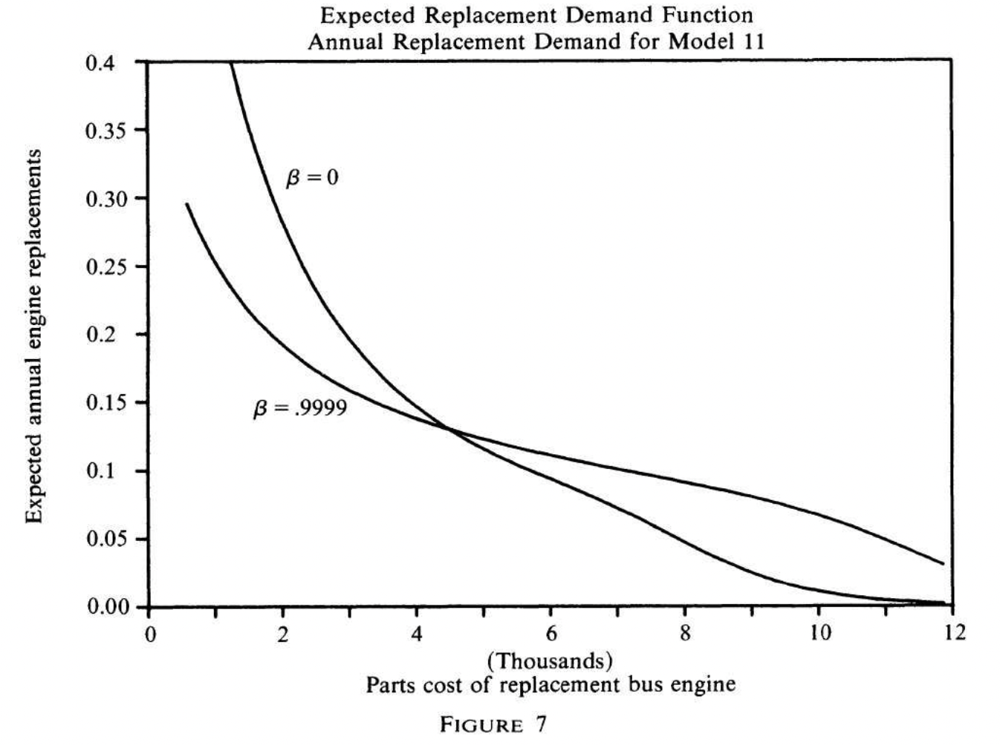

<!DOCTYPE html><html lang="en-us" >

<head>
  <meta charset="utf-8" />
  <meta name="viewport" content="width=device-width, initial-scale=1" />
  <meta http-equiv="X-UA-Compatible" content="IE=edge" />
  
  
  
    <meta name="generator" content="Wowchemy 5.1.0 for Hugo" />
  

  

  
  
  
  
  
    
    
    
  
  

  

  
  
  
    
  
  <meta name="description" content="Introduction Motivation IO: role of market structure on equilibrium outcomes.
Dynamics: study the endogenous evolution of market structure.
Supply side dynamics Irreversible investment Entry sunk costs Product repositioning costs Price adjustment costs Learning by doing Demand side dynamics Switching costs Durable or storable products Bonus motivation: AI literature studies essentially the same set of problems with similar tools (Igami 2020)" />

  
  <link rel="alternate" hreflang="en-us" href="https://matteocourthoud.github.io/course/empirical-io/07_dynamics_singleagent/" />

  


  


  
  
    <link rel="preconnect" href="https://fonts.gstatic.com" crossorigin />
  

  
  
  
    <meta name="theme-color" content="#003f5c" />
  

  
  
    
    <script src="/js/mathjax-config.js"></script>
  

  
  
  
  
    
    
    <link rel="stylesheet" href="https://cdnjs.cloudflare.com/ajax/libs/font-awesome/5.14.0/css/all.min.css" integrity="sha256-FMvZuGapsJLjouA6k7Eo2lusoAX9i0ShlWFG6qt7SLc=" crossorigin="anonymous">

    
    

    
    
    
      
    
    
      
      
        
          <link rel="stylesheet" href="https://cdnjs.cloudflare.com/ajax/libs/highlight.js/10.2.0/styles/github.min.css" crossorigin="anonymous" title="hl-light" media="print" onload="this.media='all'">
          <link rel="stylesheet" href="https://cdnjs.cloudflare.com/ajax/libs/highlight.js/10.2.0/styles/dracula.min.css" crossorigin="anonymous" title="hl-dark" media="print" onload="this.media='all'" disabled>
        
      
    

    
    
    
      <link rel="stylesheet" href="https://cdnjs.cloudflare.com/ajax/libs/leaflet/1.7.1/leaflet.min.css" integrity="sha512-1xoFisiGdy9nvho8EgXuXvnpR5GAMSjFwp40gSRE3NwdUdIMIKuPa7bqoUhLD0O/5tPNhteAsE5XyyMi5reQVA==" crossorigin="anonymous" media="print" onload="this.media='all'">
    

    

    
    
      
      

      
      

      
    
      
      

      
      

      
    
      
      

      
      

      
    
      
      

      
      

      
    
      
      

      
      

      
    
      
      

      
      

      
    
      
      

      
      

      
    
      
      

      
      

      
    
      
      

      
      

      
    
      
      

      
      

      
    
      
      

      
      

      
    
      
      

      
      

      
    
      
      

      
      

      
    
      
      

      
      

      
        <script src="https://cdn.jsdelivr.net/npm/mathjax@3/es5/tex-chtml.js" integrity="" crossorigin="anonymous" async></script>
      
    
      
      

      
      

      
    
      
      

      
      

      
    
  

  
  
  
    
      
      <link rel="preload" as="style" href="https://fonts.googleapis.com/css2?family=Roboto+Mono&family=Source+Sans+Pro:wght@200;300;400;700&display=swap">
      <link rel="stylesheet" href="https://fonts.googleapis.com/css2?family=Roboto+Mono&family=Source+Sans+Pro:wght@200;300;400;700&display=swap" media="print" onload="this.media='all'">
    
  

  
  
  
  
  
  <link rel="stylesheet" href="/css/wowchemy.4f7182ca394d705ee32d9d7750e9aa1d.css" />

  


<script async src="https://www.googletagmanager.com/gtag/js?id=UA-144780600-1"></script>
<script>
  window.dataLayer = window.dataLayer || [];

  function gtag() {
      dataLayer.push(arguments);
  }

  function trackOutboundLink(url, target) {
    gtag('event', 'click', {
         'event_category': 'outbound',
         'event_label': url,
         'transport_type': 'beacon',
         'event_callback': function () {
           if (target !== '_blank') {
             document.location = url;
           }
         }
    });
    console.debug("Outbound link clicked: " + url);
  }

  function onClickCallback(event) {
    if ((event.target.tagName !== 'A') || (event.target.host === window.location.host)) {
      return;
    }
    trackOutboundLink(event.target, event.target.getAttribute('target'));  
  }

  gtag('js', new Date());
  gtag('config', 'UA-144780600-1', { 'anonymize_ip': true });
  gtag('set', {'cookie_flags': 'SameSite=None;Secure'});

  
  document.addEventListener('click', onClickCallback, false);
</script>


  

  

  


  
  
  

  

  
    <link rel="manifest" href="/index.webmanifest" />
  

  <link rel="icon" type="image/png" href="/media/icon_hu03e9b3967b83fd39296ec9da5ff1ea05_201175_32x32_fill_lanczos_center_3.png" />
  <link rel="apple-touch-icon" type="image/png" href="/media/icon_hu03e9b3967b83fd39296ec9da5ff1ea05_201175_180x180_fill_lanczos_center_3.png" />

  <link rel="canonical" href="https://matteocourthoud.github.io/course/empirical-io/07_dynamics_singleagent/" />

  
  
  
  
  
  
  
  
    
    
  
  
  <meta property="twitter:card" content="summary" />
  
  <meta property="og:site_name" content="Matteo Courthoud" />
  <meta property="og:url" content="https://matteocourthoud.github.io/course/empirical-io/07_dynamics_singleagent/" />
  <meta property="og:title" content="Single Agent Dynamics | Matteo Courthoud" />
  <meta property="og:description" content="Introduction Motivation IO: role of market structure on equilibrium outcomes.
Dynamics: study the endogenous evolution of market structure.
Supply side dynamics Irreversible investment Entry sunk costs Product repositioning costs Price adjustment costs Learning by doing Demand side dynamics Switching costs Durable or storable products Bonus motivation: AI literature studies essentially the same set of problems with similar tools (Igami 2020)" /><meta property="og:image" content="https://matteocourthoud.github.io/media/icon_hu03e9b3967b83fd39296ec9da5ff1ea05_201175_512x512_fill_lanczos_center_3.png" />
    <meta property="twitter:image" content="https://matteocourthoud.github.io/media/icon_hu03e9b3967b83fd39296ec9da5ff1ea05_201175_512x512_fill_lanczos_center_3.png" /><meta property="og:locale" content="en-us" />
  
    
      <meta
        property="article:published_time"
        content="2021-10-29T00:00:00&#43;00:00"
      />
    
    <meta property="article:modified_time" content="2021-10-29T00:00:00&#43;00:00">
  

  


  

  
  
  
  
  
    <script src="https://cdnjs.cloudflare.com/ajax/libs/cookieconsent2/3.1.1/cookieconsent.min.js" integrity="sha256-5VhCqFam2Cn+yjw61zbBNrbHVJ6SRydPeKopYlngbiQ=" crossorigin="anonymous"></script>
    <link rel="stylesheet" href="https://cdnjs.cloudflare.com/ajax/libs/cookieconsent2/3.1.1/cookieconsent.min.css" integrity="sha256-zQ0LblD/Af8vOppw18+2anxsuaz3pWYyVWi+bTvTH8Q=" crossorigin="anonymous">
  
  <script>
  window.addEventListener("load", function(){
    window.cookieconsent.initialise({
      "palette": {
        "popup": {
          "background": "#003f5c",
          "text": "rgb(255, 255, 255)"
        },
        "button": {
          "background": "rgb(255, 255, 255)",
          "text": "#003f5c"
        }
      },
      "theme": "classic",
      "content": {
        "message": "This website uses cookies to ensure you get the best experience on our website.",
        "dismiss": "Got it!",
        "link": "Learn more",
        "href": "/privacy/"
      }
    })});
  </script>


  


  <title>Single Agent Dynamics | Matteo Courthoud</title>
</head>


<body id="top" data-spy="scroll" data-offset="70" data-target="#TableOfContents" class="page-wrapper   " data-wc-page-id="33374ffd438bd550113e66846a8b147d" >

  
  
  
  
  
  
  
  
  <script src="/js/wowchemy-init.min.66d3e0fff6d32c4ece05adee927fbd96.js"></script>

  


<aside class="search-modal" id="search">
  <div class="container">
    <section class="search-header">

      <div class="row no-gutters justify-content-between mb-3">
        <div class="col-6">
          <h1>Search</h1>
        </div>
        <div class="col-6 col-search-close">
          <a class="js-search" href="#" aria-label="Close"><i class="fas fa-times-circle text-muted" aria-hidden="true"></i></a>
        </div>
      </div>

      <div id="search-box">
        
        <input name="q" id="search-query" placeholder="Search..." autocapitalize="off"
        autocomplete="off" autocorrect="off" spellcheck="false" type="search" class="form-control"
        aria-label="Search...">
        
      </div>

      
      

      

    </section>
    <section class="section-search-results">

      <div id="search-hits">
        
      </div>

    </section>
  </div>
</aside>


  <div class="page-header">
    


<nav class="navbar navbar-expand-lg navbar-light compensate-for-scrollbar" id="navbar-main">
  <div class="container-xl">

    
    <div class="d-none d-lg-inline-flex">
      <a class="navbar-brand" href="/">Matteo Courthoud</a>
    </div>
    

    
    <button type="button" class="navbar-toggler" data-toggle="collapse"
            data-target="#navbar-content" aria-controls="navbar-content" aria-expanded="false" aria-label="Toggle navigation">
    <span><i class="fas fa-bars"></i></span>
    </button>
    

    
    <div class="navbar-brand-mobile-wrapper d-inline-flex d-lg-none">
      <a class="navbar-brand" href="/">Matteo Courthoud</a>
    </div>
    

    
    
    <div class="navbar-collapse main-menu-item collapse justify-content-end" id="navbar-content">

      
      <ul class="navbar-nav d-md-inline-flex">
        

        

        
        
        
          
        

        

        
        
        
        

        
          
            
            
          
          
            
            
            
              
            
            
          
        

        <li class="nav-item">
          <a class="nav-link " href="/#about"><span>Home</span></a>
        </li>

        
        

        

        
        
        
          
        

        

        
        
        
        

        
          
            
            
          
          
            
            
            
              
            
            
          
        

        <li class="nav-item">
          <a class="nav-link " href="/#posts"><span>Posts</span></a>
        </li>

        
        

        

        
        
        
          
        

        

        
        
        
        

        
          
            
            
          
          
            
            
            
              
            
            
          
        

        <li class="nav-item">
          <a class="nav-link " href="/#projects"><span>Research</span></a>
        </li>

        
        

        
        <li class="nav-item dropdown">
          <a href="#" class="nav-link dropdown-toggle" data-toggle="dropdown" aria-haspopup="true"><span>Courses</span><span class="caret"></span>
          </a>
          <div class="dropdown-menu">
            
              <a class="dropdown-item" href="/course/ml-econ/"><span>Machine Learning for Economics</span></a>
            
              <a class="dropdown-item" href="/course/data-science/"><span>Data Science with Python</span></a>
            
              <a class="dropdown-item" href="/course/empirical-io/"><span>PhD Industrial Organization</span></a>
            
              <a class="dropdown-item" href="/course/metrics/"><span>PhD Econometrics</span></a>
            
              <a class="dropdown-item" href="https://pp4rs.github.io/"><span>Programming Practices for Research</span></a>
            
          </div>
        </li>

        
        

        

        
        
        

        

        
        
        
        

        
          
            
            
          
          
        

        <li class="nav-item">
          <a class="nav-link " href="/cv"><span>CV</span></a>
        </li>

        
        

        

        
        
        
          
        

        

        
        
        
        

        
          
            
            
          
          
            
            
            
              
            
            
          
        

        <li class="nav-item">
          <a class="nav-link " href="/#contact"><span>Contact</span></a>
        </li>

        
        

      

        
      </ul>
    </div>

    <ul class="nav-icons navbar-nav flex-row ml-auto d-flex pl-md-2">

      
      
        
      

      
      

      
      

      
      

    </ul>

  </div>
</nav>


  </div>

  <div class="page-body">
    

<div class="container-fluid docs">
  <div class="row flex-xl-nowrap">
    <div class="col-12 col-md-3 col-xl-2 docs-sidebar">
      
<nav class="collapse docs-links" id="docs-nav">
  
  
  
  
  
  

  
  
    

    
      

      <ul class="nav docs-sidenav">
        <li><a href="/course/"><i class="fas fa-arrow-left pr-1"></i>Courses</a></li>
      </ul>

      
      
        
          
        
      


  
    
    
    
    
      
    
    

    
      <div class="docs-toc-item">
        <a class="docs-toc-link " href="/course/empirical-io/">Empirical IO</a>
    
      
        <ul class="nav docs-sidenav">
      


  <li class=""><a href="/course/empirical-io/02_demand_estimation/">Demand Estimation</a></li>


  <li class="active"><a href="/course/empirical-io/07_dynamics_singleagent/">Single Agent Dynamics</a></li>


  <li class=""><a href="/course/empirical-io/08_dynamics_games/">Dynamic Games</a></li>


  <li class=""><a href="/course/empirical-io/11_logit_demand/">Coding: Logit Demand</a></li>


  <li class=""><a href="/course/empirical-io/12_blp_1995/">Coding: BLP (1995)</a></li>


  <li class=""><a href="/course/empirical-io/17_rust_1987/">Coding: Rust (1987)</a></li>

      
        </ul>
      
    

    
      </div>
    

    
  
</nav>

    </div>

    
    
    <div class="d-none d-xl-block col-xl-2 docs-toc">
      

      <ul class="nav toc-top">
        <li><a href="#" id="back_to_top" class="docs-toc-title">Contents</a></li>
      </ul>

      <nav id="TableOfContents">
  <ul>
    <li><a href="#introduction">Introduction</a>
      <ul>
        <li><a href="#motivation">Motivation</a></li>
        <li><a href="#examples-1">Examples (1)</a></li>
        <li><a href="#examples-2">Examples (2)</a></li>
        <li><a href="#do-we-really-need-dynamics">Do we really need dynamics?</a></li>
        <li><a href="#new-empirical-io">New Empirical IO</a></li>
        <li><a href="#pros-and-cons">Pros and Cons</a></li>
        <li><a href="#from-statics-to-dynamics">From Statics to Dynamics</a></li>
      </ul>
    </li>
    <li><a href="#1st-year-macro-recap">1st year Macro Recap</a>
      <ul>
        <li><a href="#markov-decision-processes">Markov Decision Processes</a></li>
        <li><a href="#mdp-2">MDP (2)</a></li>
        <li><a href="#notation">Notation</a></li>
        <li><a href="#maximization-problem">Maximization Problem</a></li>
        <li><a href="#stationarity">Stationarity</a></li>
        <li><a href="#stationarity-2">Stationarity (2)</a></li>
        <li><a href="#value-function">Value Function</a></li>
        <li><a href="#how-to-solve">How to solve?</a></li>
        <li><a href="#bellman-equation">Bellman Equation</a></li>
        <li><a href="#bellman-equation-2">Bellman Equation (2)</a></li>
        <li><a href="#contractions">Contractions</a></li>
        <li><a href="#solving-for-the-value-function">Solving for the Value Function</a></li>
        <li><a href="#difference-with-1st-year-macro">Difference with 1st year Macro</a></li>
      </ul>
    </li>
    <li><a href="#rust-1987">Rust (1987)</a>
      <ul>
        <li><a href="#setting">Setting</a></li>
        <li><a href="#data">Data</a></li>
        <li><a href="#idea">Idea</a></li>
        <li><a href="#static-alternative">Static Alternative</a></li>
        <li><a href="#model">Model</a></li>
        <li><a href="#model-2">Model (2)</a></li>
        <li><a href="#model-3">Model (3)</a></li>
        <li><a href="#bellman-equation-1">Bellman Equation</a></li>
        <li><a href="#order-of-markow-process">Order of Markow Process</a></li>
        <li><a href="#parenthesis-state-variables">Parenthesis: State Variables</a></li>
        <li><a href="#policy-function">Policy Function</a></li>
        <li><a href="#solving-the-model">Solving the Model</a></li>
        <li><a href="#value-function-iteration">Value Function Iteration</a></li>
        <li><a href="#how-to-reconcile-model-and-data">How to Reconcile Model and Data?</a></li>
      </ul>
    </li>
    <li><a href="#rust-1987---estimation">Rust (1987) - Estimation</a>
      <ul>
        <li><a href="#uncertainty">Uncertainty</a></li>
        <li><a href="#unobservables">Unobservables</a></li>
        <li><a href="#unobservables-2">Unobservables (2)</a></li>
        <li><a href="#assumptions">Assumptions</a></li>
        <li><a href="#assumption-1">Assumption 1</a></li>
        <li><a href="#assumption-1---implications">Assumption 1 - Implications</a></li>
        <li><a href="#assumption-1---issues">Assumption 1 - Issues</a></li>
        <li><a href="#assumption-2">Assumption 2</a></li>
        <li><a href="#assumption-2---implications">Assumption 2 - Implications</a></li>
        <li><a href="#rust-shortcut-asv">Rust Shortcut: ASV</a></li>
        <li><a href="#rust-shortcut">Rust Shortcut</a></li>
        <li><a href="#assumption-2---implications-1">Assumption 2 - Implications</a></li>
        <li><a href="#assumption-3">Assumption 3</a></li>
        <li><a href="#assumption-4">Assumption 4</a></li>
        <li><a href="#assumption-4---implications">Assumption 4 - Implications</a></li>
        <li><a href="#estimation">Estimation</a></li>
        <li><a href="#likelihood-function-a1">Likelihood Function (A1)</a></li>
        <li><a href="#likelihood-function-a2">Likelihood Function (A2)</a></li>
        <li><a href="#likelihood-function-a3">Likelihood Function (A3)</a></li>
        <li><a href="#likelihood-function-a4">Likelihood Function (A4)</a></li>
        <li><a href="#likelihood-function">Likelihood Function</a></li>
        <li><a href="#likelihood-function-2">Likelihood Function (2)</a></li>
        <li><a href="#estimation-1">Estimation</a></li>
        <li><a href="#results">Results</a></li>
        <li><a href="#extensions">Extensions</a></li>
      </ul>
    </li>
    <li><a href="#hotz--miller-1993">Hotz &amp; Miller (1993)</a>
      <ul>
        <li><a href="#motivation-1">Motivation</a></li>
        <li><a href="#estimation-in-rust">Estimation in Rust</a></li>
        <li><a href="#hotz--miller-ideas">Hotz &amp; Miller Idea(s)</a></li>
        <li><a href="#two-main-equations">Two Main Equations</a></li>
        <li><a href="#hotz--miller---idea-1">Hotz &amp; Miller - Idea 1</a></li>
        <li><a href="#expected-value-function">Expected Value Function</a></li>
        <li><a href="#representation-equivalence">Representation Equivalence</a></li>
        <li><a href="#goal">Goal</a></li>
        <li><a href="#express-ev-in-terms-of-ep-1">Express EV in terms of EP (1)</a></li>
        <li><a href="#express-ev-in-terms-of-ep-2">Express EV in terms of EP (2)</a></li>
        <li><a href="#express-ev-in-terms-of-ep-3">Express EV in terms of EP (3)</a></li>
        <li><a href="#express-ev-in-terms-of-ep-4">Express EV in terms of EP (4)</a></li>
        <li><a href="#express-ev-in-terms-of-ep-5">Express EV in terms of EP (5)</a></li>
        <li><a href="#express-ev-in-terms-of-ep-6">Express EV in terms of EP (6)</a></li>
        <li><a href="#first-equation">First Equation</a></li>
        <li><a href="#recap">Recap</a></li>
        <li><a href="#from-v-to-p">From V to P</a></li>
        <li><a href="#hotz--miller---idea-2">Hotz &amp; Miller - Idea 2</a></li>
        <li><a href="#recap-1">Recap</a></li>
        <li><a href="#objective-function">Objective Function</a></li>
        <li><a href="#pseudo-likelihood">Pseudo-Likelihood</a></li>
        <li><a href="#comments">Comments</a></li>
        <li><a href="#computational-bottleneck">Computational Bottleneck</a></li>
        <li><a href="#aguirregabiria-mira-2002">Aguirregabiria, Mira (2002)</a></li>
        <li><a href="#type-1-ev-errors">Type 1 EV errors</a></li>
        <li><a href="#data-requirements">Data Requirements</a></li>
        <li><a href="#unobserved-heterogeneity">Unobserved Heterogeneity</a></li>
        <li><a href="#unobserved-heterogeneity-2">Unobserved Heterogeneity (2)</a></li>
        <li><a href="#identification">Identification</a></li>
      </ul>
    </li>
    <li><a href="#appendix">Appendix</a>
      <ul>
        <li><a href="#references-references">References [references]</a></li>
      </ul>
    </li>
  </ul>
</nav>

      
    </div>
    

    <main class="col-12 col-md-9 col-xl-8 py-md-3 pl-md-5 docs-content" role="main">

      <article class="article">

        <div class="docs-article-container">

          <h1>Single Agent Dynamics</h1>

          <p>Last updated on Oct 29, 2021</p>

          <div class="article-style">
            <h2 id="introduction">Introduction</h2>
<h3 id="motivation">Motivation</h3>
<p><strong>IO</strong>: role of <em>market structure</em> on <em>equilibrium outcomes</em>.</p>
<p><strong>Dynamics</strong>: study the <strong>endogenous evolution</strong> of <em>market structure</em>.</p>
<ul>
<li><strong>Supply</strong> side dynamics
<ul>
<li>Irreversible investment</li>
<li>Entry sunk costs</li>
<li>Product repositioning costs</li>
<li>Price adjustment costs</li>
<li>Learning by doing</li>
</ul>
</li>
<li><strong>Demand</strong> side dynamics
<ul>
<li>Switching costs</li>
<li>Durable or storable products</li>
</ul>
</li>
</ul>
<p><strong>Bonus motivation</strong>: AI literature studies essentially the same set of
problems with similar tools (<a href="#ref-igami2020artificial">Igami 2020</a>)</p>
<ul>
<li>Irony: niche topic in IO (super niche in econ), but at the core of
the frontier in computer science
<ul>
<li>Why? Computation is hard, estimation harder, but extremely
powerful prediction tool</li>
<li>The world is intrinsecally dynamic</li>
</ul>
</li>
</ul>
<h3 id="examples-1">Examples (1)</h3>
<p>Some examples in empirical IO</p>
<ul>
<li><strong>Investment</strong>
<ul>
<li>Rust (<a href="#ref-rust1987optimal">1987</a>): bus engine replacement
decision</li>
</ul>
</li>
<li><strong>Durable goods</strong>
<ul>
<li>Gowrisankaran and Rysman
(<a href="#ref-gowrisankaran2012dynamics">2012</a>): consumer demand in the
digital camcorder industry</li>
</ul>
</li>
<li><strong>Stockpiling</strong>
<ul>
<li>Erdem, Imai, and Keane (<a href="#ref-erdem2003brand">2003</a>): promotions
and stockpiling of ketchup</li>
<li>Hendel and Nevo (<a href="#ref-hendel2006measuring">2006</a>): stockpiling
of laundry detergents</li>
</ul>
</li>
<li><strong>Learning</strong>
<ul>
<li>Erdem and Keane (<a href="#ref-erdem1996decision">1996</a>): brand learning
in the laundry detergent industry</li>
<li>Crawford and Shum (<a href="#ref-crawford2005uncertainty">2005</a>): demand
learning of anti‐ulcer drug prescriptions</li>
</ul>
</li>
<li><strong>Switching costs</strong>
<ul>
<li>Handel (<a href="#ref-handel2013adverse">2013</a>): inertia in demand for
health insurance</li>
</ul>
</li>
</ul>
<h3 id="examples-2">Examples (2)</h3>
<p>But also in other applied micro fields:</p>
<ul>
<li><strong>Labor economics</strong>
<ul>
<li>Should you go to college? (<a href="#ref-keane1997career">Keane and Wolpin
1997</a>)</li>
</ul>
</li>
<li><strong>Health economics</strong>
<ul>
<li>
<p>Which health insurance to pick given there are switching costs?
(<a href="#ref-handel2013adverse">Handel 2013</a>)</p>
</li>
<li>
<p>Addiction (<a href="#ref-becker1988theory">Becker and Murphy 1988</a>)</p>
</li>
</ul>
</li>
<li><strong>Public finance</strong>
<ul>
<li>How should you set optimal taxes in a dynamic environment?
(<a href="#ref-golosov2006new">Golosov et al. 2006</a>)</li>
</ul>
</li>
</ul>
<h3 id="do-we-really-need-dynamics">Do we really need dynamics?</h3>
<p>In some cases, we can <strong>reduce</strong> a dynamic problem to a:</p>
<ol>
<li>Static problem</li>
<li>Reduced-form problem</li>
</ol>
<p>E.g., Investment decision</p>
<ul>
<li>
<p>Dynamic problem, as gains are realized after costs</p>
</li>
<li>
<p>“Static” solution: invest if $\mathbb E (NPV ) &gt; TC$</p>
</li>
<li>
<p>Action today ($a_t=0$ or $1$) does not affect the amount of future
payoffs (NPV)</p>
</li>
</ul>
<p>But many cases where it’s hard to evaluate dynamic questions in a
static/reduced-form setting.</p>
<ul>
<li>Typically, cases where decision today would affect payoffs tomorrow</li>
<li>And you care about those payoffs ($\neq$ myopia)</li>
</ul>
<blockquote>
<p>“<em>A dynamic model can do anything a static model can.</em>”</p>
</blockquote>
<h3 id="new-empirical-io">New Empirical IO</h3>
<p>So-called New Empirical IO (summary in Bresnahan
(<a href="#ref-bresnahan1989empirical">1989</a>))</p>
<ul>
<li>Some <strong>decisions today</strong> might affect <strong>payoffs tomorrow</strong></li>
<li>But the decision today depends on the <strong>state today</strong></li>
<li>And the state today might have been the result of a <strong>decision
yesterday</strong></li>
<li>Etc…</li>
<li>Need <strong>dynamics</strong> to study these questions</li>
<li>Where does it all start?
<ul>
<li>Pakes (<a href="#ref-pakes1986patents">1986</a>)</li>
<li>Berry (<a href="#ref-berry1992estimation">1992</a>)</li>
</ul>
</li>
</ul>
<h3 id="pros-and-cons">Pros and Cons</h3>
<p><strong>Advantages</strong></p>
<ul>
<li>
<p>We can adress <strong>intertemporal trade-offs</strong></p>
<ul>
<li>Flow vs stock stocks and benefits</li>
</ul>
</li>
<li>
<p>We can examine <strong>transitions</strong> and not only steady states</p>
</li>
<li>
<p>We are able to address <strong>policy questions</strong> that cannot be addressed
with reduced-form methods</p>
<ul>
<li>Standard advantage of structural estimation</li>
<li>But in a context with relevant intertemporal trade-offs /
decisions</li>
</ul>
</li>
</ul>
<p><strong>Disadvantages</strong></p>
<ul>
<li>
<p>We typically need more <strong>assumptions</strong></p>
<ul>
<li>Robustness testing will therefore be important</li>
</ul>
</li>
<li>
<p><strong>Identification</strong> in dynamic models is less transparent</p>
<ul>
<li>Thus time should be spent articulating what variation in the
data identifies our parameters of interest)</li>
</ul>
</li>
<li>
<p>It is often <strong>computationally intensive</strong> (i.e., slow / unfeasible)</p>
</li>
</ul>
<h3 id="from-statics-to-dynamics">From Statics to Dynamics</h3>
<p>Typical steps</p>
<ol>
<li>Specify the primitives of the model
<ul>
<li><strong>Static</strong>: single period agents’ payoff functions (utility or
profit)</li>
<li><strong>Dynamic</strong>: static payoffs + <em>evolution of state variables</em>
<ul>
<li>Can be exogenous</li>
<li>… or endogenous: decision today has an effect on the state
tomorrow</li>
</ul>
</li>
</ul>
</li>
<li>Solve for optimal behavior
<ul>
<li><strong>Static</strong>: tipically agents maximize current utility or profit</li>
<li><strong>Dynamic</strong>: agents maximize <em>present discounted value</em> of
future utilities or profits</li>
</ul>
</li>
<li>Search for parameter values that result in the “best match” between
our model predictions and observed behavior</li>
</ol>
<h2 id="1st-year-macro-recap">1st year Macro Recap</h2>
<h3 id="markov-decision-processes">Markov Decision Processes</h3>
<p>Formally, a discrete-time MDP consists of the following <strong>objects</strong></p>
<ul>
<li>
<p>A discrete <strong>time index</strong> $t \in \lbrace 0,1,2,&hellip;,T \rbrace$, for
$T \leq \infty$</p>
</li>
<li>
<p>A <strong>state space</strong> $\mathcal S$</p>
</li>
<li>
<p>An <strong>action space</strong> $\mathcal A$</p>
<ul>
<li>and a family of <strong>constraint sets</strong>
$\lbrace \mathcal a_t(s_t) \subseteq \mathcal A \rbrace$</li>
</ul>
</li>
<li>
<p>A family of <strong>transition probabilities</strong>
$\lbrace \Pr_{t}(s_{t+1}|s_t,a_t) \rbrace$</p>
</li>
<li>
<p>A <strong>discount factor</strong>, $\beta$</p>
</li>
<li>
<p>A family of single-period <strong>reward functions</strong>
$\lbrace (u_t(s_t,a_t) \rbrace$</p>
<ul>
<li>so that the utility functional $U$ has an additively separable
decomposition $$
U(\boldsymbol s, \boldsymbol a) = \sum_{t=0}^{T} \beta^{t} u_{t}\left(s_t, a_{t}\right)
$$</li>
</ul>
</li>
</ul>
<h3 id="mdp-2">MDP (2)</h3>
<p>In words</p>
<ul>
<li>
<p>The <strong>state space</strong> $\mathcal S$ contains all the information needed
to</p>
<ul>
<li>compute static utilities $u_t (s_t, a_t)$</li>
<li>compute transition probabilities
$\lbrace \Pr_{t} (s_{t+1}|s_t,a_t) \rbrace$</li>
</ul>
</li>
<li>
<p>The (conditional) <strong>action space</strong> $\mathcal A (s_t)$ contains all
the actions available in state $s_t$</p>
<ul>
<li>How can it be different by state? E.g. entry/exit decision if
you’re in/out of the market</li>
</ul>
</li>
<li>
<p>The <strong>transition probabilities</strong>
$\lbrace \Pr_{t+1}(s_{t+1}|s_t,a_t) \rbrace$ define the
probabilities of future states $s_{t+1}$ conditional on</p>
<ul>
<li>Present state $s_t$</li>
<li>Present decision $a_t$</li>
</ul>
</li>
<li>
<p>The <strong>discount factor</strong> $\beta$ together with the static <strong>reward
functions</strong> $\lbrace (u_t(s_t,a_t) \rbrace$ determines the
<strong>objective function</strong> $$
\mathbb E_{\boldsymbol s&rsquo;} \Bigg[ \sum_{t=0}^{T} \beta^{t} u_{t}\left(s_t, a_{t}\right) \Bigg]
$$</p>
</li>
</ul>
<h3 id="notation">Notation</h3>
<p>Brief parenthesis on notation</p>
<ul>
<li>
<p>I have seen <strong>states</strong> denoted as</p>
<ul>
<li>$s$ (for state)</li>
<li>$x$</li>
<li>$\omega$</li>
<li>others, depending on the specific context, e.g. $e$ for
experience</li>
</ul>
<p><strong>I will try to stick to $s$ all the time</strong></p>
</li>
<li>
<p>I have seen <strong>decisions</strong> denoted as</p>
<ul>
<li>$a$ (for action)</li>
<li>$d$ (for decision)</li>
<li>$x$</li>
<li>others, depending on the specific context, e.g. $i$ for
investment</li>
</ul>
<p><strong>I will try to stick to $a$ all the time</strong></p>
</li>
</ul>
<h3 id="maximization-problem">Maximization Problem</h3>
<p>The objective is to pick the decision rule (or <strong>policy function</strong>)
$P = \boldsymbol a^* = \lbrace a_1^*, &hellip;, a_t ^ * \rbrace$ that solves
$$
\max_{\boldsymbol a} \ \mathbb E_{\boldsymbol s&rsquo;} \Bigg[ \sum_{t=0}^{T} \beta^{t} u_{t} \left(s_{t}, a_{t} \right) \Bigg]
$$ Where the expectation is taken over transition probabilities
generated by the decision rule $\boldsymbol a$.</p>
<h3 id="stationarity">Stationarity</h3>
<p>In many applications, we assume <strong>stationarity</strong></p>
<ul>
<li>
<p>The <strong>transition probabilities and utility functions do not directly
depend on</strong> $t$</p>
<ul>
<li>i.e., are the same for all $t$
<ul>
<li>$\Pr_{{\color{red}{t}}} (s_{t+1}|s_t,a_t) \  \to \ \Pr(s_{t+1}|s_t,a_t)$</li>
<li>$u_{{\color{red}{t}}} (s_t,a_t) \ \to \ u(s_t,a_t)$</li>
</ul>
</li>
</ul>
</li>
<li>
<p><strong>Uncomfortable assumption?</strong></p>
</li>
<li>
<p>You think there is some reason (variable) why today’s probabilities
should be different from tomorrow’s?</p>
<ul>
<li>If <strong>observable</strong>, include that variable in the state space</li>
<li>If <strong>unobservable</strong>, integrate it out</li>
</ul>
</li>
</ul>
<h3 id="stationarity-2">Stationarity (2)</h3>
<ul>
<li>
<p>In the <strong>finite horizon</strong> case ($T \leq \infty$), stationarity does
not help much</p>
<ul>
<li>$\sum_{t=0}^{T} \beta^{t} u(s_t, a_{t})$ still depends on $t$,
conditional on $s_t$</li>
<li>Why? Difference between $t$ and $T$ matters in the sum</li>
</ul>
</li>
<li>
<p>In <strong>infinite-horizon</strong> problems, stationarity helps <strong>a lot</strong></p>
<ul>
<li>
<p>Now the difference between $t$ and $T$ is always the same,
i.e. $\infty$</p>
</li>
<li>
<p>$\sum_{t=0}^{\infty} \beta^{t} u(s_t, a_{t})$ does <strong>not</strong>
depend on $t$, conditional on $s_t$</p>
</li>
<li>
<p><em>The future looks the same whether the agent is in state $s_t$
at time $t$ or in state $s_{t+\tau} = s_t$ at time $t + \tau$</em></p>
</li>
</ul>
</li>
</ul>
<h3 id="value-function">Value Function</h3>
<p>Consider a <strong>stationary infinite-horizon</strong> problem</p>
<ul>
<li>
<p>The only variable which affects the agent’s view about the future is
the current value of the state, $s_t$</p>
</li>
<li>
<p>We can rewrite the <strong>agent’s problem</strong> as $$
V_0(s_0) = \max_{\boldsymbol a} \ \mathbb E_{\boldsymbol s&rsquo;} \Bigg[ \sum_{t=0}^{\infty} \beta^{t} u\left(s_t, a_{t}\right) \Bigg]
$$ where</p>
<ul>
<li>$a_t \in \mathcal A(s_t) \ \forall t$</li>
<li>The expectation is taken over future states $\boldsymbol s'$
<ul>
<li>that evolve according to
$\lbrace \Pr(s_{t+1}|s_t,a_t) \rbrace$</li>
</ul>
</li>
<li>$V(\cdot)$ is called the <strong>value function</strong></li>
</ul>
</li>
</ul>
<h3 id="how-to-solve">How to solve?</h3>
<ul>
<li>One could try to solve it by <strong>brute force</strong>
<ul>
<li>i.e. try to solve for the structure of all of the optimal
decisions, $\boldsymbol a^*$</li>
<li>Indeed, for finite-horizon problems, that might be necessary</li>
</ul>
</li>
<li>For <strong>stationary infinite-horizon</strong> problems, the value and policy
function should be <strong>time invariant</strong>
<ul>
<li>$V_{\color{red}{t}} (s_t) = V(s_t)$</li>
<li>$P_{\color{red}{t}} (s_t) = P(s_t)$</li>
</ul>
</li>
<li>What do we gain?</li>
</ul>
<h3 id="bellman-equation">Bellman Equation</h3>
<p>$$
\begin{align}
V(s_0) &amp;= \max_{\boldsymbol a} \ \mathbb E_{\boldsymbol s&rsquo;} \Bigg[ \sum_{t=0}^{\infty} \beta^{t} u(s_t, a_{t}) \Bigg]
= \newline
&amp;= \max_{\boldsymbol a} \ \mathbb E_{\boldsymbol s&rsquo;} \Bigg[ {\color{red}{u(s_{0}, a_{0})}} + \sum_{{\color{red}{t=1}}}^{\infty} \beta^{t} u(s_t, a_{t}) \Bigg]
= \newline
&amp;= \max_{\boldsymbol a} \ \Bigg\lbrace u(s_{0}, a_{0}) + {\color{red}{\mathbb E_{\boldsymbol s&rsquo;}}} \Bigg[ \sum_{t=1}^{\infty} \beta^{t} u(s_t, a_{t}) \Bigg] \Bigg\rbrace
= \newline
&amp;= \max_{\boldsymbol a} \ \Bigg\lbrace u(s_{0}, a_{0}) + {\color{red}{\beta}} \ \mathbb E_{\boldsymbol s&rsquo;} \Bigg[ \sum_{t=1}^{\infty} \beta^{{\color{red}{t-1}}} u(s_t, a_{t}) \Bigg] \Bigg\rbrace
= \newline
&amp;= \max_{{\color{red}{a_0}}} \ \Bigg\lbrace u(s_{0}, a_{0}) + \beta \ {\color{red}{\max_{\boldsymbol a}}}\ \mathbb E_{\boldsymbol s&rsquo;} \Bigg[ \sum_{t=1}^{\infty} \beta^{t-1} u(s_t, a_{t}) \Bigg] \Bigg\rbrace
= \newline
&amp;= \max_{a_0} \ \Bigg\lbrace u(s_{0}, a_{0}) + \beta \ {\color{red}{\int V(s_1) \Pr(s_1 | s_0, a_0)}} \Bigg\rbrace
\end{align}
$$</p>
<h3 id="bellman-equation-2">Bellman Equation (2)</h3>
<p>We have now a <strong>recursive formulation</strong> of the value function: the
<strong>Bellman Equation</strong> $$
{\color{red}{V(s_0)}} = \max_{a_0} \ \Bigg\lbrace u(s_{0}, a_{0}) + \beta \ \int {\color{red}{V(s_1)}} \Pr(s_1 | s_0, a_0) \Bigg\rbrace
$$ <strong>Intuition</strong></p>
<ul>
<li>The Bellman Equation is a <strong>functional equation</strong>
<ul>
<li>Has to be satisfied in every state</li>
<li>Can be written as ${\color{red}{V}} = T({\color{red}{V}})$</li>
<li>We are actually looking for a <strong>fixed point</strong> of $T$</li>
</ul>
</li>
</ul>
<p>The decision rule that satisfies the Bellman Equation is called the
<strong>policy function</strong> $$
a(s_0) =  \arg \max_{a_0} \ \Bigg\lbrace u(s_{0}, a_{0}) + \beta \ \int V(s_1) \Pr(s_1 | s_0, a_0) \Bigg\rbrace
$$</p>
<h3 id="contractions">Contractions</h3>
<p>Under regularity conditions</p>
<ul>
<li>$u(s, a)$ is jointly continuous and bounded in $(s, a)$</li>
<li>$\mathcal A (s)$ is a continuous correspondence</li>
</ul>
<p>It is possible to show that $$
T(W)(s) = \max_{a \in \mathcal A(s)} \ \Bigg\lbrace u(s, a) + \beta \ \int W(s&rsquo;) \Pr(s&rsquo; | s, a) \Bigg\rbrace
$$ is a <strong>contraction mapping</strong> of modulus $\beta$.</p>
<ul>
<li><strong>Contraction Mapping Theorem</strong>: then $T$ has a unique fixed point!</li>
</ul>
<h3 id="solving-for-the-value-function">Solving for the Value Function</h3>
<p>How do we actually do it in practice?</p>
<ul>
<li>For <strong>finite horizon</strong> MDPs: <strong>backward induction</strong>
<ul>
<li>Start from the last period: static maximization problem</li>
<li>Move backwards taking the future value as given</li>
</ul>
</li>
<li>For <strong>infinite horizon</strong> MDPs: different options
<ul>
<li><strong>value function iteration</strong>
<ul>
<li>most common</li>
</ul>
</li>
<li>policy function iteration</li>
<li>successive approximations</li>
</ul>
</li>
</ul>
<h3 id="difference-with-1st-year-macro">Difference with 1st year Macro</h3>
<p>So what’s going to be new here?</p>
<ol>
<li><strong>Estimation</strong>: retrieve model primitives from observed behavior
<ul>
<li>And related: uncertainty</li>
</ul>
</li>
<li><strong>Strategic interaction</strong>: multiple agents taking dynamic decisions
<ul>
<li>Next lecture</li>
</ul>
</li>
</ol>
<h2 id="rust-1987">Rust (1987)</h2>
<h3 id="setting">Setting</h3>
<p>Rust (<a href="#ref-rust1987optimal">1987</a>): <em>An Empirical Model of Harold
Zurcher</em></p>
<ul>
<li>
<p>Harold Zurcher (HZ) is the city bus superintendant in Madison, WI</p>
</li>
<li>
<p>As bus engines get older, the probability of malfunctions increases</p>
</li>
<li>
<p>HZ decides when to replace old bus engines with new ones</p>
<ul>
<li>Optimal stopping / investment problem</li>
</ul>
</li>
<li>
<p><strong>Tradeoff</strong></p>
<ul>
<li>Cost of a new engine (fixed, stock)</li>
<li>Repair costs, because of engine failures (continuous, flow)</li>
</ul>
</li>
<li>
<p>Do we care about Harold Zurcher?</p>
<ul>
<li>Obviously not (and neither did Rust), it’s a method paper</li>
<li>But referee asked for an application</li>
</ul>
</li>
</ul>
<h3 id="data">Data</h3>
<p><strong>Units of observation</strong></p>
<ul>
<li>Rust observes 162 buses over time</li>
</ul>
<p><strong>Observables</strong>: for each bus, he sees</p>
<ul>
<li>monthly mileage (RHS, state variable)</li>
<li>and whether the engine was replaced (LHS, choice variable),</li>
<li>in a given month</li>
</ul>
<p><strong>Variation</strong></p>
<ul>
<li>on average, bus engines were replaced every 5 years with over
200,000 elapsed miles</li>
<li>considerable variation in the <em>time</em> and <em>mileage</em> at which
replacement occurs</li>
</ul>
<h3 id="idea">Idea</h3>
<ul>
<li>Construct a (parametric) <strong>model</strong> which predicts the time and
mileage at which engine replacement occurs</li>
<li>Use the model predictions (conditional on parameter values) to
<strong>estimate parameters</strong> that “fit” the data
<ul>
<li><strong>predicted</strong> replacements, given mileage VS <strong>observed</strong>
replacements, given mileage</li>
</ul>
</li>
<li>Ideally use the estimates to <strong>learn something</strong> new
<ul>
<li>e.g. the correct <em>dynamic</em> demand curve for bus engine
replacement</li>
</ul>
</li>
</ul>
<h3 id="static-alternative">Static Alternative</h3>
<p>What would you do otherwise?</p>
<ul>
<li>You observe replacement decisions</li>
<li>… and replacement costs</li>
<li>$\to$ <strong>Regress</strong> replacement decision on replacement costs</li>
</ul>
<p><strong>Problem</strong></p>
<ul>
<li>Replacement benefits are a flow (lower maintenance costs)</li>
<li>… while the cost is a stock</li>
</ul>
<p><strong>Outcome</strong></p>
<ul>
<li>We expect the <em>overestimate</em> demand elasticity. Why?</li>
<li>Overpredict substitutions at low costs</li>
<li>and underpredict substitution at high cost</li>
</ul>
<h3 id="model">Model</h3>
<p>Assumptions of the structural model</p>
<ul>
<li><strong>State</strong>: $s_t \in \lbrace 0, &hellip; , s_{max} \rbrace$
<ul>
<li>engine accumulated mileage at time $t$</li>
<li><strong>Note</strong>: “continuous” in the data but has to be discretized
into bins</li>
</ul>
</li>
<li><strong>Action</strong>: $a_t \in \lbrace 0, 1 \rbrace$
<ul>
<li>replace engine at time $t$</li>
</ul>
</li>
<li><strong>State transitions</strong>:
$\Pr ( s_{t+1} | s_{0}, &hellip; , s_t ; \theta)= \Pr (s_{t+1} | s_t ; \theta )$
<ul>
<li>mileage $s_t$ evolves exogenously according to a 1st-order
Markov process</li>
<li>The transition function is the same for every bus.</li>
<li>If HZ replaces in period $t$ ($a_t = 1$), then $s_t = 0$</li>
</ul>
</li>
</ul>
<h3 id="model-2">Model (2)</h3>
<p>HZ <strong>static utility function</strong> (for a single bus) $$
u\left(s_t, a_{t} ; \theta\right)= \begin{cases}-c\left(s_t ; \theta\right) &amp; \text { if } a_{t}=0 \text { (not replace) } \newline -R-c(0 ; \theta) &amp; \text { if } a_{t}=1 \text { (replace) }\end{cases}
$$ where</p>
<ul>
<li>$c(s_t ; \theta)$: expected <strong>costs of operating</strong> a bus with
mileage $s_t$
<ul>
<li>​ including maintenance costs &amp; social costs of breakdown</li>
<li>We would expect $\frac{\partial c}{\partial s}&gt;0$</li>
</ul>
</li>
<li>$R$ is the <strong>cost of replacement</strong> (i.e., a new engine)
<ul>
<li>Note that replacement occurs immediately</li>
</ul>
</li>
<li>$u(s_t , a_t ; \theta)$: expected current utility from operating a
bus with mileage $s_t$ and making replacement decision $a_t$</li>
</ul>
<h3 id="model-3">Model (3)</h3>
<p>HZ <strong>objective function</strong> is to maximize the expected present discounted
sum of future utilities $$
V(s_t ; \theta) = \max_{\boldsymbol a} \mathbb E_{s_{t+1}} \left[\sum_{\tau=t}^{\infty} \beta^{\tau-t} u\left(s_{\tau}, a_{\tau} ; \theta\right) \ \Bigg| \ s_t, \boldsymbol a ; \theta\right]
$$ where</p>
<ul>
<li>The expectation $\mathbb E$ is over future $x$, which evolve
according to Markov process</li>
<li>$\max$ is over future choices $a_{t+1}, &hellip; ,a_{\infty}$,
<ul>
<li>because HZ will observe future states $s_{\tau}$ before choosing
future actions $a_\tau$, this is a functional</li>
</ul>
</li>
</ul>
<p><strong>Notes</strong></p>
<ul>
<li>This is for one bus (but multiple engines).</li>
<li>HZ has an infinite horizon for his decision making</li>
<li>$s_t$ summarizes state at time $t$, i.e., the expected value of
future utilities only depends on $s_t$</li>
</ul>
<h3 id="bellman-equation-1">Bellman Equation</h3>
<p>This (sequential) representation of HZ’s problem is very cumbersome to
work with.</p>
<p>We can rewrite $V (s_t; \theta)$ with the following Bellman equation $$
V\left(s_t ; \theta\right) = \max_{a_{t}} \Bigg\lbrace u\left(s_t, a_{t} ; \theta\right)+\beta \mathbb E_{s_{t+1}} \Big[V\left(s_{t+1} ; \theta\right) \Big| s_t, a_{t} ; \theta\Big] \Bigg\rbrace
$$ Basically we are dividing the infinite sum (in the sequential form)
into a present component and a future component.</p>
<p>Notes:</p>
<ul>
<li>Same $V$ on both sides of equation because of infinite horizon - the
future looks the same as the present for a given $s$ (i.e., it
doesn’t matter where you are in time).</li>
<li>The expectation $\mathbb E$ is over the state-transition
probabilities, $\Pr (s_{t+1} | s_t, a_t ; \theta)$</li>
</ul>
<h3 id="order-of-markow-process">Order of Markow Process</h3>
<p>Suppose for a moment that $s_t$ follows a second-order markov process $$
s_{t+1}=f\left(s_t, {\color{red}{s_{t-1}}}, \varepsilon ; \theta\right)
$$ Now $s_t$ is not sufficient to describe current $V$</p>
<ul>
<li>We need both $s_t$ and $s_{t-1}$ in the state space (i.e.,
$V (s_t , {\color{red}{s_{t-1}}}; \theta)$ contains $s_{t-1}$, too),</li>
<li>and the expectation is over the transition probability
$\Pr (s_{t+1} | s_t, {\color{red}{s_{t-1}}}, a_t ; \theta)$</li>
</ul>
<h3 id="parenthesis-state-variables">Parenthesis: State Variables</h3>
<p>Which variables should be state variables? I.e. should be included in
the state space?</p>
<p><strong>General rule</strong> for 1st order markow processes: variables need to</p>
<ul>
<li>define expected current payoff, <strong>and</strong></li>
<li>define expectations over next period state (i.e., distribution of
$s_{t+1}$)</li>
</ul>
<p>What do you do otherwise? Integrate them out! <strong>Examples</strong></p>
<ul>
<li>Weather affects static utitilies but not transition probabilities
<ul>
<li>More annoying to replace the engine if it rains</li>
<li>Integration means: <em>“compute expected utility of Harold Zurcher
before he opens the window”</em></li>
</ul>
</li>
<li>Month of the year affects transition probabilities but not utilities
<ul>
<li>Buses are used more in the winter</li>
<li>Integration means: <em>“compute average transition probabilities
over months”</em></li>
</ul>
</li>
</ul>
<blockquote>
<p><strong>Note</strong>: you can always get the non-expected value function if you
know the probability of raining or the transition probabilities by
month</p>
</blockquote>
<h3 id="policy-function">Policy Function</h3>
<p>Along with this value function comes a corresponding <strong>policy (or
choice) function</strong> mapping the state $s_t$ into HZ’s optimal replacement
choice $a_t$ $$
P \left(s_t ; \theta\right) =  \max_{a_{t}} \Bigg\lbrace u\left(s_t, a_{t} ; \theta\right) + \beta \mathbb E_{s_{t+1}} \Big[ V \left(s_{t+1} ; \theta\right) \Big| s_t, a_{t} ; \theta\Big] \Bigg\rbrace
$$ Given $\frac{\partial c}{\partial s}&gt;0$, the policy function has the
form $$
P \left(s_t ; \theta\right) =  \begin{cases}1 &amp; \text { if } s_t \geq \gamma(\theta) \newline 0 &amp; \text { if } s_t&lt;\gamma(\theta)\end{cases}
$$ where $\gamma$ is the replacement mileage.</p>
<p>How would this compare with the optimal replacement mileage if HZ was
myopic?</p>
<ul>
<li>Answer: HZ would wait until $R \leq c(s)$ for the replacement action</li>
</ul>
<h3 id="solving-the-model">Solving the Model</h3>
<p>Why do we want to solve for the value and policy functions?</p>
<ul>
<li>We want to know the agent’s optimal behavior and the equilibrium
outcomes</li>
<li>and be able to conduct comparative statics/dynamics (a.k.a.
counterfactual simulations)</li>
</ul>
<p>We have the <strong>Bellman Equation</strong> $$
V\left(s_t ; \theta\right) = \max_{a_{t}} \Bigg\lbrace u\left(s_t, a_{t} ; \theta\right)+\beta \mathbb E_{s_{t+1}} \Big[V\left(s_{t+1} ; \theta\right) \ \Big|
\ s_t, a_{t} ; \theta\Big] \Bigg\rbrace
$$ Which we can compactly write as $$
V\left(s_t ; \theta\right) = T \Big( V\left(s_{t+1} ; \theta\right) \Big)
$$ <strong>Blackwell’s Theorem</strong>: under regularity conditions, $T$ is a
contraction mapping with modulus $\beta$.</p>
<p><strong>Contraction Mapping Theorem</strong>: $T$ has a fixed point and we can find
it by iterating $T$ from any starting value $V^{(0)}$.</p>
<h3 id="value-function-iteration">Value Function Iteration</h3>
<p>What does <strong>Blackwell’s Theorem</strong> allow us to do?</p>
<ol>
<li>Start with any arbitrary function $V^{(0)}(\cdot)$</li>
<li>Apply the mapping $T$ to get $V^{(1)}(\cdot) = T (V^{(0)}(\cdot))$</li>
<li>Apply again $V^{(2)}(\cdot) = T (V^{(1)}(\cdot))$</li>
<li>Continue applying $T$ , and $V^{(k)}$ will converge to the unique
fixed point of $T$
<ul>
<li>i.e., the true value function $V(s_t; \theta)$</li>
</ul>
</li>
<li>Once we have $V(s_t; \theta)$, it’s fairly trivial to compute the
policy function $P(s_t; \theta)$
<ul>
<li>Static optimization problem (given $V$)</li>
</ul>
</li>
</ol>
<p>This process is called <strong>value function iteration</strong></p>
<h3 id="how-to-reconcile-model-and-data">How to Reconcile Model and Data?</h3>
<p><strong>Ideal Estimation Routine</strong></p>
<ol>
<li>Pick a parameter value $\theta$</li>
<li>Solve value and policy function (<em>inner loop</em>)</li>
<li>Match <em>predicted choices</em> with <em>observed choices</em></li>
<li>Find the parameter value $\hat \theta$ that best fits the data
(<em>outer loop</em>)
<ul>
<li>Makes the observed choices “closest” to the predicted choices</li>
<li>(or maximizes the likelihood of the observed choices)</li>
</ul>
</li>
</ol>
<p><strong>Issue</strong>: model easily <strong>rejected</strong> by the data</p>
<ul>
<li>
<p>The policy function takes the the form: replace iff
$s_t \geq \gamma(\theta)$</p>
</li>
<li>
<p>Can’t explain the coexistence of e.g. “<em>a bus without replacement at
22K miles</em>” and “<em>another bus being replaced at 17K mile</em>s” in the
data</p>
</li>
<li>
<p>We need some <strong>unobservables</strong> in the model to explain why observed
choices do not exactly match predicted choices</p>
</li>
</ul>
<h2 id="rust-1987---estimation">Rust (1987) - Estimation</h2>
<h3 id="uncertainty">Uncertainty</h3>
<p>How can we explain different replacement actions at different mileages
in the data?</p>
<ol>
<li>Add other observables</li>
<li><strong>Add some stochastic element</strong></li>
</ol>
<p>But <strong>where</strong>? Two options</p>
<ol>
<li>Randomness in decisions
<ul>
<li>I.e. <em>“Harold Zurcher sometimes would like to replace the bus
engine but he forgets”</em></li>
<li>Probably still falsifiable</li>
<li>Also need “<em>Harold Zurcher sometimes would like not to replace
but replacement happens”</em> 🤔🤔🤔</li>
</ul>
</li>
<li>Randomness in the state
<ul>
<li>Harold Zurcher knows something that we don’t</li>
<li>He <strong>always makes the optimal decision</strong> but based on somethig
we don’t observe</li>
</ul>
</li>
</ol>
<h3 id="unobservables">Unobservables</h3>
<p>Rust uses the following <strong>utility specification</strong>: $$
u\left(s_t, a_{t}, {\color{red}{\epsilon_{t}}} ; \theta\right) = u\left(s_t, a_{t} ; \theta\right) + {\color{red}{\epsilon_{a_{t} t}}} = \begin{cases} - c\left(s_t ; \theta\right) + {\color{red}{\epsilon_{0 t}}} &amp; \text { if } \ a_{t}=0 \newline \newline -R-c(0 ; \theta) + {\color{red}{\epsilon_{1 t}}} &amp; \text { if } \ a_{t}=1 \end{cases}
$$</p>
<ul>
<li>The $\epsilon_{it}$ are components of utility of alternative $a$
that are observed by HZ but not by us, the econometrician.
<ul>
<li>E.g., the fact that an engine is running unusually smoothly
given its mileage,</li>
<li>or the fact that HZ is sick and doesn’t feel like replacing the
engine this month</li>
</ul>
</li>
<li><strong>Note</strong>: we have assumed addictive separability of $\epsilon$</li>
<li>The $\epsilon_a$s also affect HZ’s replacement decision</li>
<li>$\epsilon_{it}$ are <strong>both observed and relevant</strong> $\to$ part of the
state space</li>
</ul>
<blockquote>
<p>Can we still <strong>solve</strong> the model? Can we <strong>estimate</strong> it?</p>
</blockquote>
<h3 id="unobservables-2">Unobservables (2)</h3>
<p>The <strong>Bellman Equation</strong> becomes $$
V \Big( {\color{red}{ \lbrace s_\tau \rbrace_{\tau=1}^t , \lbrace \epsilon_\tau \rbrace_{\tau=1}^t }} ; \theta \Big) = \max_{a_{t}} \Bigg\lbrace u\left(s_t, a_{t} ; \theta\right) + {\color{red}{\epsilon_{it}}} + \beta \mathbb E_{s_{t+1}, {\color{red}{\epsilon_{t+1}}}} \Big[V\left(s_{t+1}, {\color{red}{\epsilon_{it+1}}} ; \theta\right) \ \Big|
\ {\color{red}{ \lbrace s_\tau \rbrace_{\tau=1}^t , \lbrace \epsilon_\tau \rbrace_{\tau=1}^t }}, a_{t} ; \theta\Big] \Bigg\rbrace
$$ <strong>Issues</strong></p>
<ul>
<li>The problem is <strong>not Markow</strong> anymore
<ul>
<li>Is $\epsilon_t$ correlated with $\epsilon_{t-\tau}$? How?</li>
<li>Is $\epsilon_t$ correlated with $s_t$? And $s_{t-\tau}$? How?</li>
</ul>
</li>
<li>Dimension of the <strong>state space</strong> has increased
<ul>
<li>From
$k = (k \text{ points})^{1 \text{ variable} \times 1 \text{ period}}$
points, to
$\infty = (k \text{ points})^{3 \text{ variables} \times \infty \text{ periods}}$
🤯🤯</li>
<li>Assuming all variables assume $k$ values</li>
</ul>
</li>
<li>Number of variables to integrate over to compute <strong>expectation</strong>
$\mathbb E$ has increased
<ul>
<li>From one variable, $s$, to three,
$(s, \epsilon_{0}, \epsilon_{1})$</li>
</ul>
</li>
</ul>
<h3 id="assumptions">Assumptions</h3>
<p>Rust makes <strong>4 assumptions</strong> to make the problem tractable:</p>
<ol>
<li>First order Markow process of $\epsilon$</li>
<li>Conditional independence of $\epsilon_t | s_t$ from $\epsilon_{t-1}$
and $s_{t-1}$</li>
<li>Independence of $\epsilon_t$ from $s_t$</li>
<li>Logit distribution of $\epsilon$</li>
</ol>
<h3 id="assumption-1">Assumption 1</h3>
<p><strong>A1</strong>: first-order markov process of $\epsilon$ $$
\Pr \Big(s_{t+1}, \epsilon_{t+1} \Big| s_{1}, &hellip;, s_t, \epsilon_{1}, &hellip;, \epsilon_{t}, a_{t} ; \theta\Big) = \Pr \Big(s_{t+1}, \epsilon_{t+1} \Big| s_t, \epsilon_{t}, a_{t} ; \theta \Big)
$$</p>
<ul>
<li>
<p><strong>What it buys</strong></p>
<ul>
<li>$s$ and $\epsilon$ prior to current period are irrelevant</li>
</ul>
</li>
<li>
<p><strong>What it still allows</strong>:</p>
<ul>
<li>allows $s_t$ to be correlated with $\epsilon_t$</li>
</ul>
</li>
<li>
<p><strong>What are we assuming away</strong></p>
<ul>
<li>Any sort of longer run dependence</li>
<li>Does it matter? If yes, just re-consider what is one time period</li>
<li>Or make the state space larger (as usual in Markow processes)</li>
</ul>
</li>
</ul>
<h3 id="assumption-1---implications">Assumption 1 - Implications</h3>
<p>The Bellman Equation becomes $$
V\left(s_t, {\color{red}{\epsilon_{t}}} ; \theta\right) = \max_{a_{t}} \Bigg\lbrace u\left(s_t, a_{t} ; \theta\right) + {\color{red}{\epsilon_{a_{t} t}}} + \beta \mathbb E_{s_{t+1}, {\color{red}{\epsilon_{t+1}}}} \Big[V(s_{t+1}, {\color{red}{\epsilon_{t+1}}} ; \theta) \ \Big| \ s_t, a_{t}, {\color{red}{\epsilon_{t}}} ; \theta \Big] \Bigg\rbrace
$$</p>
<ul>
<li>Now the <strong>state</strong> is $(s_t, \epsilon_t)$
<ul>
<li>sufficient, because defines both current utility and (the
expectation of) next-period state, under the first-order Markov
assumption</li>
<li>$\epsilon_t$ is now analogous to $s_t$</li>
<li>State space now is
$k^3 = (k \text{ points})^{3 \text{ variables} \times 1 \text{ period}}$
<ul>
<li>From
$\infty = (k \text{ points})^{3 \text{ variables} \times \infty \text{ periods}}$</li>
</ul>
</li>
</ul>
</li>
<li>Now we could use <strong>value function iteration</strong> to solve the problem
<ul>
<li>If $\epsilon_t$ is continuous, it has to be discretised</li>
</ul>
</li>
</ul>
<h3 id="assumption-1---issues">Assumption 1 - Issues</h3>
<p><strong>Open issues</strong></p>
<ol>
<li>
<p><strong>Curse of dimensionality in the state space</strong>:
($s_t, \epsilon_{0t}, \epsilon_{1t}$)</p>
<ul>
<li>Before, there were $k$ points in state space (discrete values of
$x$)</li>
<li>Now there are $k^3$ : $k$ each for $s$, $\epsilon_0$,
$\epsilon_1$
<ul>
<li>(Assuming we discretize all state variables into $k$ values)</li>
</ul>
</li>
<li>Generally, number of points in state space (and thus
computational time) increases exponentially in the number of
variables</li>
</ul>
</li>
<li>
<p><strong>Curse of dimensionality in the expected value</strong>:
$\mathbb E_{s_{t+1}, \epsilon_{0,t+1}, \epsilon_{1,t+1}}$</p>
<ul>
<li>For each point in state space (at each iteration of the
contraction mapping), need to compute</li>
</ul>
<p>$$
\mathbb E_{s_{t+1}, \epsilon_{t+1}} \Big[V (s_{t+1}, \epsilon_{t+1} ; \theta) \ \Big|  \ s_t, a_{t}, \epsilon_{t} ; \theta \Big]
$$</p>
<ul>
<li>Before, this was a 1-dimensional integral (or sum), now it’s
3-dimensional</li>
</ul>
</li>
<li>
<p><strong>Initial conditions</strong></p>
</li>
</ol>
<h3 id="assumption-2">Assumption 2</h3>
<p><strong>A2</strong>: conditional independence of $\epsilon_t | s_t$ from
$\epsilon_{t-1}$ and $s_{t-1}$ $$
\Pr \Big(s_{t+1}, \epsilon_{t+1} \Big| s_t, \epsilon_{t}, a_{t} ; \theta \Big) = \Pr \Big( \epsilon_{t+1} \Big| s_{t+1} ; \theta \Big) \Pr \Big( s_{t+1} \Big| s_t, a_{t} ; \theta \Big)
$$</p>
<ul>
<li>
<p><strong>What it buys</strong></p>
<ul>
<li>$s_{t+1}$ is independent of $\epsilon_t$</li>
<li>$\epsilon_{t+1}$ is independent of $\epsilon_t$ and $s_t$,
conditional on $s_{t+1}$</li>
</ul>
</li>
<li>
<p><strong>What it still allows</strong>:</p>
<ul>
<li>$\epsilon$ can be correlated across time, but only through the
$s$ process</li>
</ul>
</li>
<li>
<p><strong>What are we assuming away</strong></p>
<ul>
<li>
<p>Any time of persistent heterogeneity</p>
</li>
<li>
<p>Does it matter? Easily yes</p>
</li>
<li>
<p>There are tons of applications where the unobservables are
either fixed or correlated over time</p>
<ul>
<li>If fixed, there are methods to handle unobserved
heterogeneity (i.e. bus “types”)</li>
</ul>
</li>
</ul>
</li>
</ul>
<h3 id="assumption-2---implications">Assumption 2 - Implications</h3>
<p>The Bellman Equation is $$
V\left(s_t, {\color{red}{\epsilon_{t}}} ; \theta\right) = \max_{a_{t}} \Bigg\lbrace u\left(s_t, a_{t} ; \theta\right) + {\color{red}{\epsilon_{a_{t} t}}} + \beta \mathbb E_{s_{t+1}, {\color{red}{\epsilon_{t+1}}}} \Big[V (s_{t+1}, {\color{red}{\epsilon_{t+1}}} ; \theta) \Big| s_t, a_{t} ; \theta \Big] \Bigg\rbrace
$$</p>
<ul>
<li>Now $\epsilon_{t}$ is noise that <strong>doesn’t affect the future</strong>
<ul>
<li>That is, conditional on $s_{t+1}$, $\epsilon_{t+1}$ is
uncorrelated with $\epsilon_{t}$</li>
</ul>
</li>
</ul>
<blockquote>
<p><strong>Remeber</strong>: if $\epsilon$ does not affect the future, it should’t be
in the state space!</p>
<p>How? Integrate it out.</p>
</blockquote>
<h3 id="rust-shortcut-asv">Rust Shortcut: ASV</h3>
<p>Rust: define the <strong>alternative-specific value function</strong> $$
\begin{align}
&amp;\bar V_0 \left(s_t ; \theta\right) = u\left(s_t, 0 ; \theta\right) + \beta \mathbb E_{s_{t+1}, {\color{red}{\epsilon_{t+1}}}} \Big[V\left(s_{t+1}, {\color{red}{\epsilon_{t+1}} }; \theta\right) | s_t, a_{t}=0 ; \theta\Big] \newline
&amp;\bar V_1 \left(s_t ; \theta\right) = u\left(s_t, 1 ; \theta\right) + \beta \mathbb E_{s_{t+1}, {\color{red}{\epsilon_{t+1}}}} \Big[V\left(s_{t+1}, {\color{red}{\epsilon_{t+1}}} ; \theta\right) | s_t, a_{t}=1 ; \theta\Big]
\end{align}
$$</p>
<ul>
<li>
<p>$\bar V_0 (s_t)$ is the present discounted value of not replacing,
net of $\epsilon_{0t}$</p>
</li>
<li>
<p><strong>The state does not depend on</strong> $\epsilon_{t}$!</p>
</li>
<li>
<p>What is the relationship with the value function? $$
V\left(s_t, \epsilon_{t} ; \theta\right) = \max_{a_{t}} \Bigg\lbrace \begin{array}{l}
\bar V_0 \left(s_t ; \theta\right)+\epsilon_{0 t}
\ ; \newline
\bar V_1 \left(s_t ; \theta\right)+\epsilon_{1 t}
\end{array} \Bigg\rbrace
$$</p>
</li>
<li>
<p>We have a 1-to-1 mapping between
$V\left(s_t, \epsilon_{t} ; \theta\right)$ and
$\bar V_a \left(s_t ; \theta\right)$ !</p>
<ul>
<li>If we have one, we can get the other</li>
</ul>
</li>
</ul>
<h3 id="rust-shortcut">Rust Shortcut</h3>
<p>Can we solve for $\bar V$?</p>
<p>Yes! They have a <strong>recursive formulation</strong> $$
\begin{aligned}
&amp;
\bar V_0 \left(s_t ; \theta\right) = u\left(s_t, 0 ; \theta\right) + \beta \mathbb E_{s_{t+1}, {\color{red}{\epsilon_{t+1}}}} \Bigg[ \max_{a_{t+1}} \Bigg\lbrace \begin{array}{l}
\bar V_0 \left(s_{t+1} ; \theta\right) + {\color{red}{\epsilon_{0 t+1}}}
\ ; \newline
\bar V_1 \left(s_{t+1} ; \theta\right) + {\color{red}{\epsilon_{1 t+1}}}
\end{array} \Bigg\rbrace \ \Bigg| \ s_t, a_{t}=0 ; \theta \Bigg] \newline
&amp;
\bar V_1 \left(s_t ; \theta\right) = u\left(s_t, 1 ; \theta\right) + \beta \mathbb E_{s_{t+1}, {\color{red}{\epsilon_{t+1}}}} \Bigg[ \max_{a_{t+1}} \Bigg\lbrace \begin{array}{l}
\bar V_0 \left(s_{t+1} ; \theta\right) + {\color{red}{\epsilon_{0 t+1}}}
\ ; \newline
\bar V_1 \left(s_{t+1} ; \theta\right) + {\color{red}{\epsilon_{1 t+1}}}
\end{array} \Bigg\rbrace \ \Bigg| \ s_t, a_{t}=1 ; \theta \Bigg] \newline
\end{aligned}
$$</p>
<ul>
<li>Rust (<a href="#ref-rust1988maximum">1988</a>) shows that it’s a joint
contraction mapping</li>
<li><strong>Memo</strong>: the state space now is
$2k = (2 \text{ actions}) \times (k \text{ points})^{1 \text{ variables} \times 1 \text{ period}}$
<ul>
<li>instead of
$3^k = (k \text{ points})^{3 \text{ variables} \times 1 \text{ period}}$</li>
<li>Much smaller!</li>
</ul>
</li>
<li><strong>Lesson</strong>: any state variable that does not affect continuation
values (the future) does not have to be in the “actual” state space</li>
</ul>
<h3 id="assumption-2---implications-1">Assumption 2 - Implications</h3>
<p>We can also <strong>split the expectation</strong> in the alternative-specific value
function $$
\begin{aligned}
&amp;
\bar V_0 \left(s_t ; \theta\right) = u\left(s_t, 0 ; \theta\right) + \beta \mathbb E_{s_{t+1}} \Bigg[ \mathbb E_{{\color{red}{\epsilon_{t+1}}}} \Bigg[ \max_{a_{t+1}} \Bigg\lbrace \begin{array}{l}
\bar V_0 \left(s_{t+1} ; \theta\right) + {\color{red}{\epsilon_{0 t+1}}}
\ ; \newline
\bar V_1 \left(s_{t+1} ; \theta\right) + {\color{red}{\epsilon_{1 t+1}}}
\end{array} \Bigg\rbrace \ \Bigg| \ s_t \Bigg] \ \Bigg| \ s_t, a_{t}=0 ; \theta \Bigg] \newline
&amp;
\bar V_1 \left(s_t ; \theta\right) = u\left(s_t, 1 ; \theta\right) + \beta \mathbb E_{s_{t+1}} \Bigg[ \mathbb E_{{\color{red}{\epsilon_{t+1}}}} \Bigg[ \max_{a_{t+1}} \Bigg\lbrace \begin{array}{l}
\bar V_0 \left(s_{t+1} ; \theta\right) + {\color{red}{\epsilon_{0 t+1}}}
\ ; \newline
\bar V_1 \left(s_{t+1} ; \theta\right) + {\color{red}{\epsilon_{1 t+1}}}
\end{array} \Bigg\rbrace \ \Bigg| \ s_t \Bigg] \ \Bigg| \ s_t, a_{t}=1 ; \theta \Bigg] \newline
\end{aligned}
$$ This allows us to concentrate on one single term $$
\mathbb E_{{\color{red}{\epsilon_{t+1}}}} \Bigg[ \max_{a_{t+1}} \Bigg\lbrace \begin{array}{l}
\bar V_0 \left(s_{t+1} ; \theta\right) + {\color{red}{\epsilon_{0 t+1}}}
\ ; \newline
\bar V_1 \left(s_{t+1} ; \theta\right) + {\color{red}{\epsilon_{1 t+1}}}
\end{array} \Bigg\rbrace \ \Bigg| \ s_t \Bigg]
$$ <strong>Open issues</strong></p>
<ul>
<li>Distribution of $\epsilon_{t+1}$ has to be simulated</li>
<li>Distribution of $\epsilon_{t+1}$ depends on $s_t$</li>
</ul>
<h3 id="assumption-3">Assumption 3</h3>
<p><strong>A3</strong>: independence of $\epsilon_t$ from $s_t$ $$
\Pr \Big( \epsilon_{t+1} \Big| s_{t+1} ; \theta \Big) \Pr \Big( s_{t+1} \Big| s_t, a_{t} ; \theta \Big) = \Pr \big( \epsilon_{t+1} \big| \theta \big) \Pr \Big( s_{t+1} \Big| s_t, a_{t} ; \theta \Big)
$$</p>
<ul>
<li>
<p><strong>What it buys</strong></p>
<ul>
<li>$\epsilon$ not correlated with anything $$
\mathbb E_{{\color{red}{\epsilon_{t+1}}}} \Bigg[ \max_{a_{t+1} \in \lbrace 0, 1 \rbrace } \Bigg\lbrace \begin{array}{l}
\bar V_0 \left(s_{t+1} ; \theta\right) + {\color{red}{\epsilon_{0 t+1}}}
\ ; \newline
\bar V_1 \left(s_{t+1} ; \theta\right) + {\color{red}{\epsilon_{1 t+1}}}
\end{array} \Bigg\rbrace \ \Bigg]
$$</li>
</ul>
</li>
<li>
<p><strong>What are we assuming away</strong></p>
<ul>
<li>Some state-specific noise… probably irrelevant</li>
</ul>
</li>
<li>
<p><strong>Open Issues</strong></p>
<ul>
<li>Distribution of $\epsilon_{t+1}$ has to be simulated</li>
</ul>
</li>
</ul>
<h3 id="assumption-4">Assumption 4</h3>
<p><strong>A4</strong>: $\epsilon$ is type 1 extreme value distributed (logit)</p>
<ul>
<li>
<p><strong>What it buys</strong></p>
<ul>
<li>Closed form solution for $\mathbb E_{\epsilon_{t+1}}$</li>
</ul>
</li>
<li>
<p><strong>What are we assuming away</strong></p>
<ul>
<li>
<p>Different substitution patterns</p>
</li>
<li>
<p>Relevant? Maybe, if there are at least three options (here
binary choice)</p>
<ul>
<li>As logit assumption in demand estimation</li>
</ul>
</li>
</ul>
</li>
</ul>
<p><strong>Logit magic</strong> 🧙🪄 $$
\mathbb E_{\epsilon} \Bigg[ \max_n \bigg( \Big\lbrace \delta_n + \epsilon_n \Big\rbrace_{n=1}^N \bigg) \Bigg] = 0.5772 + \ln \bigg( \sum_{n=1}^N e^{\delta_n} \bigg)
$$</p>
<p>where $0.5772$ is Euler’s constant</p>
<h3 id="assumption-4---implications">Assumption 4 - Implications</h3>
<p>The Bellman equation becomes $$
\begin{aligned}
&amp;
\bar V_0 \left(s_t ; \theta\right) = u\left(s_t, 0 ; \theta\right) + \beta \mathbb E_{s_{t+1}} \Bigg[ 0.5772 + \ln \Bigg( \sum_{a&rsquo; \in \lbrace 0, 1 \rbrace} e^{\bar V_{a&rsquo;} (s_{t+1} ; \theta)} \Bigg) \ \Bigg| \ s_t, a_{t}=0 ; \theta \Bigg] \newline
&amp;
\bar V_1 \left(s_t ; \theta\right) = u\left(s_t, 1 ; \theta\right) + \beta \mathbb E_{s_{t+1}} \Bigg[ 0.5772 + \ln \Bigg( \sum_{a&rsquo; \in \lbrace 0, 1 \rbrace} e^{\bar V_{a&rsquo;} (s_{t+1} ; \theta)} \Bigg) \ \Bigg| \ s_t, a_{t}=1 ; \theta \Bigg] \newline
\end{aligned}
$$</p>
<ul>
<li>We got <strong>fully rid of $\epsilon$</strong>!
<ul>
<li>How? With a lot of assumptions</li>
</ul>
</li>
</ul>
<h3 id="estimation">Estimation</h3>
<p>So far we have analysized how the <strong>4 assumptions</strong> help <strong>solving the
model</strong>.</p>
<ul>
<li>What about <strong>estimation</strong>?</li>
</ul>
<p><strong>Maximum Likelihood</strong></p>
<ul>
<li>For a single bus, the <strong>likelihood function</strong> is</li>
</ul>
<p>$$
\mathcal L = \Pr \Big(s_{1}, &hellip; , s_T, a_{0}, &hellip; , a_{T} \ \Big| \ s_{0} ; \theta\Big)
$$</p>
<ul>
<li>i.e. probability of observed decisions
$\lbrace a_{0}, &hellip; , a_{T} \rbrace$</li>
<li>and sequence of states $\lbrace s_{1}, &hellip; , s_T \rbrace$</li>
<li>conditional on the initial state $s_0$</li>
<li>and the parameter values $\theta$</li>
</ul>
<blockquote>
<p>What is the impact of the 4 assumptions on the likelihood function?</p>
</blockquote>
<h3 id="likelihood-function-a1">Likelihood Function (A1)</h3>
<p><strong>A1</strong>: First order Markow process of $\epsilon$</p>
<ul>
<li>We gain independence across time</li>
<li>We can decompose the joint distribution in marginals across time</li>
</ul>
<p>$$
\begin{align}
\mathcal L(\theta) &amp;=  \Pr \Big(s_{1}, &hellip; , s_T, a_{0}, &hellip; , a_{T} \Big| s_{0} ; \theta\Big)\newline
&amp;=  \prod_{t=1}^T \Pr \Big(a_{t+1} , s_{t+1} \Big| s_t, a_t ; \theta\Big)
\end{align}
$$</p>
<h3 id="likelihood-function-a2">Likelihood Function (A2)</h3>
<p><strong>A2</strong>: independence of $\epsilon_t$ from $\epsilon_{t-1}$ and $s_{t-1}$
on $s_t$</p>
<ul>
<li>
<p>We can decompose the joint distribution of $a_t$ and $s_{t+1}$ into
marginals $$
\begin{align}
\mathcal L(\theta) &amp;= \prod_{t=1}^T \Pr \Big(a_{t+1} , s_{t+1} \Big| s_t, a_t ; \theta\Big)
= \newline
&amp;= \prod_{t=1}^T \Pr \big(a_t \big| s_t ; \theta\big) \Pr \Big(s_{t+1} \Big| s_t, a_t ; \theta\Big)
\end{align}
$$</p>
</li>
<li>
<p>$\Pr \big(s_{t+1} \big| s_t, a_t ; \theta\big)$ can be estimated
from the data</p>
<ul>
<li>we’ll come back to it</li>
</ul>
</li>
<li>
<p>for $\Pr \big(a_t \big| s_t ; \theta\big)$ we need the two remaining
assumptions</p>
</li>
</ul>
<h3 id="likelihood-function-a3">Likelihood Function (A3)</h3>
<p><strong>A3</strong>: Independence of $\epsilon_t$ from $s_t$</p>
<ul>
<li>No need to condition on $s_t$</li>
<li>E.g. probability of replacement</li>
</ul>
<p>$$
\begin{align}
\Pr \big(a_t=1 \big| s_t ; \theta \big) &amp;= \Pr \Big( \bar V_1 (s_{t+1} ; \theta) + \epsilon_{1 t+1} \geq \bar V_0 (s_{t+1} ; \theta) + \epsilon_{0 t+1} \ \Big| \ s_t ; \theta \Big)
= \newline
&amp;= \Pr \Big( \bar V_1 (s_{t+1} ; \theta) + \epsilon_{1 t+1} \geq \bar V_0 (s_{t+1} ; \theta) + \epsilon_{0 t+1} \ \Big| \ \theta \Big)
\end{align}
$$</p>
<ul>
<li>In words: same distribution of shocks in every state</li>
</ul>
<h3 id="likelihood-function-a4">Likelihood Function (A4)</h3>
<p><strong>A4</strong>: Logit distribution of $\epsilon$</p>
<ul>
<li>E.g. probability of replacement becomes</li>
</ul>
<p>$$
\begin{align}
\Pr \big(a_t=1 \big| s_t ; \theta \big) &amp;= \Pr \Big( \bar V_1 (s_{t+1} ; \theta) + \epsilon_{1 t+1} \geq \bar V_0 (s_{t+1} ; \theta) + \epsilon_{0 t+1} \ \Big| \ \theta \Big)
= \newline
&amp;= \frac{e^{\bar V_1 (s_{t+1} ; \theta)}}{e^{\bar V_0 (s_{t+1} ; \theta)} + e^{\bar V_1 (s_{t+1} ; \theta)}}
\end{align}
$$</p>
<ul>
<li>We have a closed form expression!</li>
</ul>
<h3 id="likelihood-function">Likelihood Function</h3>
<p>The <strong>final form</strong> of the likelihood function for one bus is $$
\mathcal L(\theta) = \prod_{t=1}^T \Pr\big(a_t \big| s_t ; \theta \big) \Pr \Big(s_{t+1} \ \Big| \ s_t, a_t ; \theta\Big)
$$ where</p>
<ul>
<li>$\Pr \Big(s_{t+1} \ \Big| \ s_t, a_t ; \theta\Big)$ can be estimated
from the data
<ul>
<li>given mileage $x$ and investment decision $a$, what are the
observed frequencies of future states $x&rsquo;$?</li>
<li>does not have to depend on $\theta$</li>
</ul>
</li>
<li>$\Pr\big(a_t \big| s_t ; \theta \big)$ depends on
$\bar V_a (s ; \theta)$
<ul>
<li>$\bar V_a (s ; \theta)$ we know how to compute</li>
<li>given a value of $\theta$</li>
<li>solve by value function iteration</li>
</ul>
</li>
</ul>
<h3 id="likelihood-function-2">Likelihood Function (2)</h3>
<p>Since we have may buses, $j$, the likelihood of the data is $$
\mathcal L(\theta) = \prod_{j} \mathcal L_j (\theta) = \prod_{j} \prod_{t=1}^T \Pr\big(a_{jt} \big| s_{jt} ; \theta \big) \Pr \Big(s_{j,t+1} \ \Big| \ s_{jt}, a_{jt} ; \theta\Big)
$$ And, as usual, we prefer to work with log-likelihoods $$
\log \mathcal L(\theta) = \sum_{j} \sum_{t=1}^T \Bigg( \log \Pr\big(a_{jt} \big| s_{jt} ; \theta \big) + \log\Pr \Big(s_{j,t+1} \ \Big| \ s_{jt}, a_{jt} ; \theta\Big) \Bigg)
$$</p>
<h3 id="estimation-1">Estimation</h3>
<p>Now we have all the pieces to estimate $\theta$!</p>
<p><strong>Procedure</strong></p>
<ol>
<li>Estimate the state transition probabilities
$\Pr \big(s_{t+1} \big| s_t, a_t ; \theta\big)$</li>
<li>Select a value of $\theta$</li>
<li>Init a choice-specific value function
$\bar V_a^{(0)} (s_{t+1} ; \theta)$
<ol>
<li>Apply the Bellman operator to compute
$\bar V_a^{(1)} (s_{t+1} ; \theta)$</li>
<li>Iterate until convergence to
$\bar V_d^{(k \to \infty)} (s_{t+1} ; \theta)$ (<em>inner loop</em>)</li>
</ol>
</li>
<li>Compute the choice probabilities
$\Pr \big(a_t\big| s_t ; \theta \big)$</li>
<li>Compute the likelihood
$\mathcal L = \prod_j \prod_{t=1}^T \Pr \big(a_t \big| s_t ; \theta\big) \Pr \Big(s_{t+1} \Big| s_t, a_t ; \theta\Big)$</li>
<li>Iterate (2-5) until you are have found a (possibly global) minimum
(<em>outer loop</em>)</li>
</ol>
<h3 id="results">Results</h3>
<p>What do <strong>dynamics</strong> add?</p>
<ul>
<li><strong>Static</strong> demand curve ($\beta =0$) is much more sensitive to the
price of engine replacement. Why?
<ul>
<li>Compares present price with present savings</li>
</ul>
</li>
<li>If you compare present price with flow of future benefits, you are
less price sensitive
<ul>
<li>More realistic</li>
</ul>
</li>
</ul>

<h3 id="extensions">Extensions</h3>
<p>Main <strong>limitation</strong> of Rust (<a href="#ref-rust1987optimal">1987</a>): <strong>value
function iteration</strong></p>
<ul>
<li>Costly: has to be done for each parameter explored during
optimization</li>
<li>Particularly costly if the state space is large</li>
</ul>
<p><strong>Solutions</strong></p>
<ol>
<li>Solve the model without solving a fixed point problem
<ul>
<li>Hotz and Miller (<a href="#ref-hotz1993conditional">1993</a>)</li>
</ul>
</li>
<li>Solve the model and estimate the parameters at the same time
<ul>
<li>Inner and outer loop in parallel</li>
<li>Imai, Jain, and Ching (<a href="#ref-imai2009bayesian">2009</a>)</li>
</ul>
</li>
<li>Treat the estimation as a constrained optimization problem
<ul>
<li>MPEC, as for demand</li>
<li>Use off-the-shelf optimization algorithms</li>
<li>Su and Judd (<a href="#ref-su2012constrained">2012</a>)</li>
</ul>
</li>
</ol>
<p>We’ll cover Hotz and Miller (<a href="#ref-hotz1993conditional">1993</a>) since at
the core of the estimation of dynamic games.</p>
<h2 id="hotz--miller-1993">Hotz &amp; Miller (1993)</h2>
<h3 id="motivation-1">Motivation</h3>
<p><strong>Setting</strong>: Harold Zurcher problem</p>
<ul>
<li>same model</li>
<li>same assumptions</li>
<li>same notation</li>
<li>same objective</li>
</ul>
<p><strong>Problem</strong>: computationally intense to do value function iteration</p>
<blockquote>
<p>Can we solve the model without solving a fixed point problem?</p>
</blockquote>
<h3 id="estimation-in-rust">Estimation in Rust</h3>
<p>How did we estimate the model in Rust? <strong>Two main equations</strong></p>
<ol>
<li>
<p>Solve the <strong>Bellman equation</strong> of the alternative-specific value
function $$
{\color{green}{\bar V(s; \theta)}} = \tilde f( {\color{green}{\bar V(s; \theta)}})
$$</p>
</li>
<li>
<p>Compute the <strong>expected policy function</strong> $$
{\color{blue}{P( \cdot | s; \theta)}} = \tilde g( {\color{green}{\bar V(s; \theta)}} ; \theta)
$$</p>
</li>
<li>
<p>Maximize the likelihood function</p>
</li>
</ol>
<p>$$
\mathcal L(\theta) = \prod_{j} \prod_{t=1}^T {\color{blue}{ \Pr\big(a_{jt} \big| s_{jt} ; \theta \big)}} \Pr \Big(s_{j,t+1} \ \Big| \ s_{jt}, a_{jt} ; \theta\Big)
$$</p>
<blockquote>
<p>Can we remove step 1?</p>
</blockquote>
<h3 id="hotz--miller-ideas">Hotz &amp; Miller Idea(s)</h3>
<p><strong>Idea 1</strong>: it would be great if we could start from something like $$
{\color{blue}{P(\cdot|s; \theta)}} = T( {\color{blue}{P(\cdot|s; \theta)}} ; \theta)
$$</p>
<ul>
<li>No need to solve for the value function</li>
<li>But we would still need a to solve a <strong>fixed point</strong> problem</li>
<li>Back from the start? No</li>
</ul>
<p><strong>Idea 2</strong>: could replace the RHS element with a <strong>consistent estimate</strong>
$$
{\color{blue}{P(\cdot|s; \theta)}} = T( {\color{red}{\hat P(\cdot|s; \theta)}} ; \theta)
$$ And this could give us an estimating equation!</p>
<blockquote>
<p>Unclear? No problem, let’s go slowly step by step</p>
</blockquote>
<h3 id="two-main-equations">Two Main Equations</h3>
<ol>
<li>
<p><strong>Bellman equation</strong> $$
{\color{green}{\bar V_a \left(s_t ; \theta\right)}} = u\left(s_t, a ; \theta\right) + \beta \mathbb E_{s_{t+1}, \epsilon_{t+1}} \Bigg[ \max_{a&rsquo;} \Big\lbrace {\color{green}{\bar V_{a&rsquo;}}} \left(s_{t+1}; \theta\right) + \epsilon_{a&rsquo;,t+1} \Big\rbrace \ \Big| \ s_t, a_t=a ; \theta \Bigg]
$$</p>
</li>
<li>
<p><strong>Expected policy function</strong></p>
</li>
</ol>
<p>$$
{\color{blue}{\Pr \big(a_t=a \big| s_t ; \theta \big)}} = \Pr \Big( {\color{green}{\bar V_a (s_{t+1} ; \theta)}} + \epsilon_{a, t+1} \geq {\color{green}{\bar V_{a&rsquo;} (s_{t+1} ; \theta)}} + \epsilon_{a&rsquo;, t+1} , \ \forall a&rsquo; \ \Big| \ \theta \Big)
$$</p>
<p>Expected decision <strong>before</strong> the shocks $\epsilon_t$ are realized</p>
<ul>
<li><strong>Not</strong> the policy function
<ul>
<li>The policy function maps
$s_t \times \epsilon \to \lbrace 0 , 1 \rbrace$</li>
<li>The expected policy function maps $s_t \to [ 0 , 1 ]$</li>
</ul>
</li>
<li>Easier to work with: does not depend on the shocks
<ul>
<li>Not a deterministic policy, but a stochastic one</li>
</ul>
</li>
</ul>
<h3 id="hotz--miller---idea-1">Hotz &amp; Miller - Idea 1</h3>
<p>How do we get from the two equations $$
\begin{aligned}
{\color{green}{\bar V(s; \theta)}} &amp;= \tilde f( {\color{green}{\bar V(s; \theta)}}) \newline
{\color{blue}{P(\cdot|s; \theta)}} &amp;= \tilde g( {\color{green}{\bar V(s; \theta)}} ; \theta)
\end{aligned}
$$ To one? $$
{\color{blue}{P(\cdot|s; \theta)}} = T ({\color{blue}{P(\cdot|s; \theta)}}; \theta)
$$ If we could express $\bar V$ in terms of $P$, … $$
\begin{aligned}
{\color{green}{\bar V(s; \theta)}} &amp; = \tilde h( {\color{blue}{P(\cdot|s; \theta)}})  \newline
{\color{blue}{P(\cdot|s; \theta)}} &amp;= \tilde g( {\color{green}{\bar V(s; \theta)}} ; \theta)
\end{aligned}
$$</p>
<p>…. we could then substitute the first equation into the second …</p>
<p><strong>But</strong>, easier to work with a different representation of the value
function.</p>
<h3 id="expected-value-function">Expected Value Function</h3>
<p>Recall Rust <strong>value function</strong> (not the alternative-specific $\bar V$)
$$
V\left(s_t, \epsilon_t ; \theta\right) = \max_{a_{t}} \Bigg\lbrace u \left( s_t, a_{t} ; \theta \right)  + \epsilon_{a_{t} t} + \beta \mathbb E_{s_{t+1}, \epsilon_{t+1}} \Big[V\left(s_{t+1}, \epsilon_{t+1} ; \theta\right) \Big| s_t, a_{t} ; \theta\Big] \Bigg\rbrace
$$ We can express it in terms of <strong>expected value function</strong></p>
<p>$$
V\left(s_t ; \theta\right) = \mathbb E_{\epsilon_t} \Bigg[ \max_{a_{t}} \Bigg\lbrace u\left(s_t, a_t ; \theta\right) + \epsilon_{a_{t} t}+ \beta \mathbb E_{s_{t+1}} \Big[V\left(s_{t+1}; \theta\right) \Big| s_t, a_{t} ; \theta\Big] \Bigg\rbrace \Bigg]
$$</p>
<ul>
<li>
<p>Value of being in state $s_t$ without knowing the realization of the
shock $\epsilon_t$</p>
<ul>
<li><em>“Value of Harold Zurcher before opening the window and seeing
if it’s raining or not”</em></li>
</ul>
</li>
<li>
<p>Analogous to the relationship between policy funciton and expected
policy function</p>
</li>
<li>
<p><strong>Note</strong></p>
<ul>
<li>expectation of future value now is only over $s_{t+1}$</li>
<li>$V\left(s_t ; \theta\right)$ can be solved via value function
iteration as the operator on the RHS is a contraction</li>
</ul>
</li>
</ul>
<h3 id="representation-equivalence">Representation Equivalence</h3>
<p>Recall the <strong>alternative-specific value function</strong> of Rust</p>
<p>$$
\begin{align}
{\color{green}{\bar V_a \left( s_t ; \theta\right)}} &amp;= u\left(s_t, d ; \theta\right) + \beta \mathbb E_{s_{t+1}, \epsilon_{t+1}} \Bigg[ \max_{a&rsquo;} \Big\lbrace {\color{green}{\bar V_{a&rsquo;} \left(s_{t+1}; \theta\right)}} + \epsilon_{a&rsquo;,t+1} \Big\rbrace \ \Big| \ s_t, a_t=a ; \theta \Bigg] \newline
&amp;=u\left(s_t, a ; \theta\right)+\beta \mathbb E_{s_{t+1}, \epsilon_{t+1}} \Big[ {\color{orange}{V \left( s_{t+1}, \epsilon_{t+1} ; \theta \right)}} \Big| s_t, a_t=a ; \theta \Big]
\newline
&amp;= u \left( s_t, a ; \theta \right) + \beta \mathbb E_{s_{t+1}} \Big[ {\color{red}{V \left( s_{t+1} ; \theta \right)}} \Big| s_t, a_t=a; \theta \Big]
\end{align}
$$</p>
<p>Relationship with the <strong>value function</strong></p>
<p>$$
{\color{orange}{V \left(s_t, \epsilon_{t} ; \theta \right)}} = \max_{a_{t}} \Big\lbrace {\color{green}{ \bar  V_0 \left( s_t ; \theta \right)}} + \epsilon_{0t}, {\color{green}{\bar V_1 \left( s_t ; \theta \right)}} + \epsilon_{1t} \Big\rbrace
$$</p>
<p>Relationship with the <strong>expected value function</strong> $$
{\color{red}{V\left(s_t ; \theta\right)}} = \mathbb E_{\epsilon_t} \Big[ {\color{orange}{V\left(s_t, \epsilon_{t} ; \theta\right)}} \ \Big| \ s_t \Big]
$$</p>
<h3 id="goal">Goal</h3>
<p>We switched from <strong>alternative-specific value function</strong>
${\color{green}{\bar V (s_t ; \theta)}}$ to <strong>expected value function</strong>
${\color{red}{V(s_t ; \theta)}}$</p>
<ul>
<li>But the goal is the same</li>
</ul>
<p>Go from this representation $$
\begin{align}
{\color{red}{V(s ; \theta)}} &amp; = f( {\color{red}{V(s ; \theta)}}) \newline
{\color{blue}{P(\cdot | s ; \theta)}} &amp; = g( {\color{red}{V(s ; \theta)}}; \theta)
\end{align}
$$ To this $$
\begin{align}
{\color{red}{V(s ; \theta)}} &amp; = h( {\color{blue}{P(\cdot|s ; \theta)}} ; \theta) \newline
{\color{blue}{P(\cdot|s ; \theta)}} &amp; = g({\color{red}{V(s ; \theta)}}; \theta)
\end{align}
$$ I.e. we want to express the <strong>expected value function (EV)</strong> in terms
of the <strong>expected policy function (EP)</strong>.</p>
<blockquote>
<p>**Note **: the $f$, $g$ and $h$ functions are different functions now.</p>
</blockquote>
<h3 id="express-ev-in-terms-of-ep-1">Express EV in terms of EP (1)</h3>
<p>First, let’s ged rid of one operator: the <strong>max</strong> operator $$
V\left(s_t ; \theta\right)
= \sum_a \Pr \Big(a_t=a | s_t ; \theta \Big) * \left[\begin{array}{c}
u\left(s_t, a ; \theta\right) + \mathbb E_{\epsilon_t} \Big[\epsilon_{at}\Big| a_t=a, s_t\Big] \newline \qquad + \beta \mathbb E_{s_{t+1}} \Big[V\left(s_{t+1} ; \theta\right) \Big| s_t, a_t=a ; \theta\Big]
\end{array}\right]
$$</p>
<ul>
<li>
<p>We are just substituting the $\max$ with the policy
$\Pr\left(a_t=a| s_t ; \theta\right)$</p>
</li>
<li>
<p>Important: we got rid of the $\max$ operator</p>
</li>
<li>
<p>But we are still taking the expectation over</p>
<ul>
<li>Future states $s_{t+1}$</li>
<li>Shocks $\epsilon_t$</li>
</ul>
</li>
</ul>
<h3 id="express-ev-in-terms-of-ep-2">Express EV in terms of EP (2)</h3>
<p>Now we get rid of another operator: the expectation over $s_{t+1}$ $$
\mathbb E_{s_{t+1}} \Big[V\left(s_{t+1} ; \theta\right) \Big| s_t, a_t=a ; \theta\Big] \qquad \to \qquad \sum_{s_{t+1}} V\left(s_{t+1} ; \theta\right) \Pr \Big(s_{t+1} \Big| s_t, a_t=a ; \theta \Big)
$$ where</p>
<ul>
<li>$\sum_{s_{t+1}}$ is the summation over the next states</li>
<li>$\Pr (s_{t+1} | s_t, a_t=a ; \theta )$ is the transition probability
(conditional on a particular choice)</li>
</ul>
<p>so that the expected value function becomes $$
V\left(s_t ; \theta\right)
= \sum_a \Pr \Big(a_t=a | s_t ; \theta \Big) * \left[\begin{array}{c}
u\left(s_t, a ; \theta\right) + \mathbb E_{\epsilon_t} \Big[\epsilon_{at}\Big| a_t=a, s_t\Big] \newline + \beta \sum_{s_{t+1}} V\left(s_{t+1} ; \theta\right) \Pr \Big(s_{t+1} \Big| s_t, a_t=a ; \theta \Big)
\end{array}\right]
$$</p>
<h3 id="express-ev-in-terms-of-ep-3">Express EV in terms of EP (3)</h3>
<p>The previous equation, was defined at the state level $s_t$</p>
<ul>
<li>system of $k$ equations, 1 for each state (value of $x$)</li>
</ul>
<p>If we <strong>stack</strong> them, we can write them as $$
V\left(s ; \theta\right)
= \sum_a \Pr \Big(a \ \Big| \ s ; \theta \Big) .* \Bigg[
u\left(s, a ; \theta\right) + \mathbb E_{\epsilon} \Big[\epsilon_{a} \ \Big| \ a, s \Big] + \beta \ T(a ; \theta) \ V(s ; \theta) \Bigg]
$$ where</p>
<ul>
<li>$T(a)$: $k \times k$ matrix of transition probabilities from state
$s_t$ to $s_{t+1}$, given decision $a$</li>
<li>$.*$ is the dot product operator (or element-wise matrix
multiplication)</li>
</ul>
<h3 id="express-ev-in-terms-of-ep-4">Express EV in terms of EP (4)</h3>
<p>Now we have a system of $k$ equations in $k$ unknowns that we can solve.</p>
<p>Tearing down notation to the bare minimum, we have $$
V = \sum_a P_a .* \bigg[ u_a + \mathbb E [\epsilon_a ] + \beta \ T_a \ V \bigg]
$$ which we can rewrite as $$
V - \beta \  \left( \sum_a P_a .* T_a \right) V = \sum_a P_a .* \bigg[ u_a + \mathbb E [\epsilon_a ] \bigg]
$$</p>
<p>and finally we can solve for $V$ through the famous <strong>Hotz and Miller
inversion</strong> $$
V = \left[I - \beta \ \sum_a P_a .* T_a \right]^{-1} \ * \ \left( \sum_a P_a \ .* \ \bigg[ u_a + \mathbb E [\epsilon_a] \bigg] \right)
$$ Solved? No. We still need to do something about
$\mathbb E [\epsilon_a]$.</p>
<h3 id="express-ev-in-terms-of-ep-5">Express EV in terms of EP (5)</h3>
<p>What is $\mathbb E [\epsilon_a]$?</p>
<p>Let’s consider for example the expected value of the shock, conditional
on investment $$
\begin{aligned}
\mathbb E \Big[ \epsilon_{1 t} \ \Big| \ a_t = 1, \cdot \Big] &amp;= \mathbb E \Big[ \epsilon_{t} \ \Big| \ \bar V_1 \left( s_t ; \theta \right) + \epsilon_{1 t} &gt; \bar V_0 \left( s_t ; \theta \right) + \epsilon_{0 t} \Big] \newline
&amp; = \mathbb E \Big[ \epsilon_{1 t} \ \Big| \ \bar V_1 \left( s_t ; \theta \right)  - \bar V_0 \left( s_t ; \theta \right) &gt; \epsilon_{0 t} - \epsilon_{1 t} \Big]
\end{aligned}
$$ with <strong>logit magic</strong> 🧙🪄 is $$
\mathbb E\left[\epsilon_{1 t} | a_{t}=1, s_t\right] = 0.5772 - \ln \left(P\left(s_t ; \theta\right)\right)
$$</p>
<ul>
<li>where $0.5772$ is Euler’s constant.</li>
</ul>
<p>We again got rid of another $\max$ operator!</p>
<h3 id="express-ev-in-terms-of-ep-6">Express EV in terms of EP (6)</h3>
<p>Now we can substitute it back and we have an equation which is <em>just</em> a
function of primitives $$
\begin{aligned}
V(\cdot ; \theta) =&amp; \Big[I-(1-P(\cdot ; \theta)) \beta T(0 ; \theta)-P(\cdot ; \theta) \beta T(1 ; \theta)\Big]^{-1}
\newline * &amp; \left[
\begin{array}{c}
(1-P(\cdot ; \theta))\Big[u(\cdot, 0 ; \theta)+0.5772-\ln (1-P(\cdot ; \theta))\Big] \newline + P(\cdot ; \theta)\Big[u(\cdot, 1 ; \theta) + 0.5772 - \ln (P(\cdot ; \theta))\Big]
\end{array}
\right]
\end{aligned}
$$</p>
<p>Or more compactly $$
V = \left[I - \beta \ \sum_a P_a .* T_a \right]^{-1} \ * \ \left( \sum_a P_a \ .* \ \bigg[ u_a + 0.5772 - \ln(P_d) \bigg] \right)
$$</p>
<h3 id="first-equation">First Equation</h3>
<p>What is the first equation? $$
V = \left[I - \beta \ \sum_a P_a .* T_a \right]^{-1} \ * \ \left( \sum_a P_a \ .* \ \bigg[ u_a + 0.5772 - \ln(P_a) \bigg] \right)
$$ <strong>Expected static payoff</strong>:
$\sum_a P_a \ .* \ \bigg[ u_a + 0.5772 + \ln(P_a) \bigg]$</p>
<ul>
<li>Is the expected static payoff of choice $a$ in each state,
$u_a + 0.5772 + \ln(P_a)$</li>
<li>… integrated over the choice probabilities, $P_a$</li>
<li>It’s a $k \times 1$ vector</li>
</ul>
<p><strong>Unconditional transition probabilities</strong>: $\sum_a P_a .* T_a$</p>
<ul>
<li>Are the transition probabilities conditional on a choice $a$ for
every present and future state, $T_a$</li>
<li>… integrated over the choice probabilities, $P_a$</li>
<li>It’s a $k \times k$ matrix</li>
</ul>
<h3 id="recap">Recap</h3>
<p>We got our first equation $$
{\color{red}{V}} = \left[I - \beta \ \sum_a {\color{blue}{P_a}} .* T_a \right]^{-1} \ * \ \left( \sum_a {\color{blue}{P_a}} \ .* \ \bigg[ u_a + 0.5772 - \ln({\color{blue}{P_a}}) \bigg] \right)
$$</p>
<p>I.e. $$
\begin{align}
{\color{red}{V(s ; \theta)}} &amp; = h( {\color{blue}{P(s ; \theta)}} ; \theta) \newline
\end{align}
$$</p>
<blockquote>
<p>What about the second equation
${\color{blue}{P(\cdot|s ; \theta)}} = g({\color{red}{V(s ; \theta)}}; \theta)$?</p>
</blockquote>
<h3 id="from-v-to-p">From V to P</h3>
<p>In general, the expected probability of investment is $$
P(a=1; \theta)= \Pr \left[\begin{array}{c}
u(\cdot, 1 ; \theta)+\epsilon_{1 t}+\beta \mathbb E \Big[V(\cdot ; \theta) \Big| \cdot, a_{t}=1 ; \theta \Big]&gt; \newline \qquad
u(\cdot, 0 ; \theta) + \epsilon_{0 t}+\beta \mathbb E \Big[V(\cdot ; \theta) \Big| \cdot, a_{t}=0 ; \theta \Big]
\end{array}\right]
$$</p>
<p>With the <strong>logit assumption</strong>, simplifies to $$
{\color{blue}{P(a=1 ; \theta)}} = \frac{\exp \Big(u(\cdot, 1 ; \theta)+\beta T(1 ; \theta) V(\cdot ; \theta) \Big)}{\sum_{a&rsquo;} \exp \Big(u(\cdot, a&rsquo; ; \theta)+\beta T(a&rsquo; ; \theta) V(\cdot ; \theta) \Big)} = \frac{\exp (u_1 +\beta T_1 {\color{red}{V}} )}{\sum_{a&rsquo;} \exp (u_{a&rsquo;} +\beta T_{a&rsquo;} {\color{red}{V}} )}
$$</p>
<p>Now we have also the second equation! $$
\begin{align}
{\color{blue}{P(s ; \theta)}} &amp; = g({\color{red}{V(s ; \theta)}}; \theta)
\end{align}
$$</p>
<h3 id="hotz--miller---idea-2">Hotz &amp; Miller - Idea 2</h3>
<p><strong>Idea 2</strong>: Replace ${\color{blue}{P} (\cdot)}$ on the RHS with a
<em>consistent</em> estimator ${\color{Turquoise}{\hat P (\cdot)}}$ $$
{\color{cyan}{\bar P(\cdot ; \theta)}} = g(h({\color{Turquoise}{\hat P(\cdot)}} ; \theta); \theta)
$$</p>
<ul>
<li>
<p>${\color{cyan}{\bar P(\cdot ; \theta_0)}}$ will converge to the true
${\color{blue}{P(\cdot ; \theta_0)}}$, because
${\color{Turquoise}{\hat P (\cdot)}}$ is converging to
${\color{blue}{P(\cdot ; \theta_0)}}$ asymptotically.</p>
<ul>
<li><strong>Note</strong>: pay attention to $\theta_0$ vs $\theta$ here:
${\color{cyan}{\bar P(\cdot ; \theta)}}$ does <strong>not</strong> generally
converge to ${\color{blue}{P(\cdot ; \theta)}}$for arbitrary
$\theta$, because ${\color{Turquoise}{\hat P(\cdot)}}$ is
converging to ${\color{blue}{P(\cdot ; \theta_0)}}$ but <strong>not</strong>
${\color{blue}{P(\cdot ; \theta)}}$ with any $\theta$.</li>
</ul>
</li>
</ul>
<p>How to compute ${\color{Turquoise}{\hat P(\cdot)}}$?</p>
<ul>
<li>
<p>From the data, you observe states and decisions</p>
</li>
<li>
<p>You can compute frequency of decisions given states</p>
<ul>
<li>In Rust: frequency of engine replacement, given a mileage
(discretized)</li>
</ul>
</li>
<li>
<p><strong>Assumption</strong>: you have enough data</p>
<ul>
<li>What if a state is not realised?</li>
<li>Use frequencies in <em>observed</em> states to extrapolate frequencies
in <em>unobserved</em> states</li>
</ul>
</li>
</ul>
<h3 id="recap-1">Recap</h3>
<p><strong>Steps</strong> so far</p>
<ol>
<li>
<p>Estimate the <strong>conditional choice probabilities</strong>
${\color{Turquoise}{\hat P}}$ from the data</p>
<ul>
<li>Nonparametrically: frequency of each decision in each state</li>
</ul>
</li>
<li>
<p>Solve for the expected value function with the inverstion step $$
{\color{orange}{\hat V}} = \left[I - \beta \ \sum_a  {\color{Turquoise}{\hat P_a}} .* T_a \right]^{-1} \ * \ \left( \sum_a {\color{Turquoise}{\hat P_a}} \ .* \ \bigg[ u_a + 0.5772 - \ln({\color{Turquoise}{\hat P_a}}) \bigg] \right)
$$</p>
</li>
<li>
<p>Compute the <strong>predicted CCP</strong>, given $V$ $$
{\color{cyan}{\bar P(a=1 ; \theta)}} = \frac{\exp (u_1 +\beta T_1 {\color{orange}{\hat V}} )}{\sum_{a&rsquo;} \exp (u_{a&rsquo;} +\beta T_{a&rsquo;} {\color{orange}{\hat V}} )}
$$</p>
</li>
</ol>
<blockquote>
<p>What now? Use the estimated CCP to build an objective function.</p>
</blockquote>
<h3 id="objective-function">Objective Function</h3>
<p>We have (at least) 2 options</p>
<ol>
<li>Hotz and Miller (<a href="#ref-hotz1993conditional">1993</a>) use GMM</li>
</ol>
<p>$$
\mathbb E \Big[a_t - \bar P(s_t, \theta) \ \Big| \ s_t \Big] = 0 \quad \text{ at } \quad \theta = \theta_0
$$</p>
<ol>
<li>Aguirregabiria and Mira (<a href="#ref-aguirregabiria2002swapping">2002</a>)
use MLE
<ul>
<li>by putting $\bar P(s_t, \theta)$ in the likelihood function
instead of $P(s_t, \theta)$</li>
</ul>
</li>
</ol>
<p>We will follow the second approach</p>
<h3 id="pseudo-likelihood">Pseudo-Likelihood</h3>
<p>The likelihood function for one bus is $$
\mathcal{L}(\theta) = \prod_{t=1}^{T}\left(\hat{\operatorname{Pr}}\left(a=1 \mid s_{t}; \theta\right) \mathbb{1}\left(a_{t}=1\right)+\left(1-\hat{\operatorname{Pr}}\left(a=0 \mid s_{t}; \theta\right)\right) \mathbb{1}\left(a_{t}=0\right)\right)
$$ where $\hat \Pr\big(a_{t} \big| s_{t} ; \theta \big)$ is a function
of</p>
<ul>
<li>CCPs $\hat P$: estimated from data</li>
<li>transition matrix $T$: estimated from the data, given $\theta$</li>
<li>static payoffs $u$: known, given $\theta$</li>
<li>discount factor $\beta$ : assumed</li>
</ul>
<blockquote>
<p>Why <strong>pseudo-likelihood</strong>? We have inputed something that is not a
primitive but a consistent estimate of an equilibrium object, $\hat P$</p>
</blockquote>
<h3 id="comments">Comments</h3>
<p>Now a few comments on Hotz and Miller (<a href="#ref-hotz1993conditional">1993</a>)</p>
<ul>
<li>Computational bottleneck</li>
<li>Aguirregabiria and Mira (<a href="#ref-aguirregabiria2002swapping">2002</a>)</li>
<li>Importance of the T1EV assumption</li>
<li>Data requirements</li>
<li>Unobserved heterogeneity</li>
<li>Identification</li>
</ul>
<h3 id="computational-bottleneck">Computational Bottleneck</h3>
<p>There is still 1 computational <strong>bottleneck</strong> in HM: the inversion step
$$
V = \left[I - \beta \ \sum_a P_a .* T_a \right]^{-1} \ * \ \left( \sum_a P_a \ .* \ \bigg[ u_a + 0.5772 - \ln(P_a) \bigg] \right)
$$ The $\left[I - \beta \ \sum_a P_a .* T_a \right]$ matrix has
dimension $k \times k$</p>
<ul>
<li>With large state space, hard to invert</li>
<li>Even with modern computational power</li>
<li>Hotz et al. (<a href="#ref-hotz1994simulation">1994</a>): forward simulation of
the value function
<ul>
<li>You have the policy, the transitions and the utilities</li>
<li>Just compute discounted flow of payoffs</li>
<li><strong>Core</strong> idea behind the estimation of dynamic games</li>
</ul>
</li>
</ul>
<h3 id="aguirregabiria-mira-2002">Aguirregabiria, Mira (2002)</h3>
<p>Hotz and Miller (<a href="#ref-hotz1993conditional">1993</a>) inversion gets us a
recursive equation in <strong>probability space</strong></p>
<ul>
<li>instead of the Bellman Equation in the <strong>value space</strong></li>
</ul>
<p>$$
\bar P(\cdot ; \theta) = g(h(\hat P(\cdot) ; \theta); \theta)
$$</p>
<p><strong>Idea</strong></p>
<ul>
<li>Do you gain something by iterating $K$ imes?
<ul>
<li>$K=1$: Hotz and Miller (<a href="#ref-hotz1993conditional">1993</a>)</li>
<li>$K \to \infty$: Rust (<a href="#ref-rust1987optimal">1987</a>)</li>
</ul>
</li>
<li><strong>Monte Carlo simulations</strong>: finite sample properties of K−stage
estimators improve monotonically with K
<ul>
<li>But especially for $K=2$!</li>
<li>Really <strong>worth iterating once</strong></li>
</ul>
</li>
</ul>
<h3 id="type-1-ev-errors">Type 1 EV errors</h3>
<p>Crucial assumption</p>
<ul>
<li>Without logit errors, we need to simulate their distribution</li>
<li>True also for Rust</li>
<li>But it’s generally accepted
<ul>
<li>doesn’t imply it’s innocuous</li>
</ul>
</li>
</ul>
<h3 id="data-requirements">Data Requirements</h3>
<p>For both Hotz et al. (<a href="#ref-hotz1994simulation">1994</a>) and Rust
(<a href="#ref-rust1987optimal">1987</a>), we need to <strong>discretize the state
space</strong></p>
<ul>
<li>Can be complicated with continuous variables</li>
<li>Problem also in Rust</li>
<li>But particularly problematic in Hotz et al.
(<a href="#ref-hotz1994simulation">1994</a>)
<ul>
<li>Relies crucially on consistency of CCP estimates</li>
<li>Need sufficient <strong>variation in actions for each state</strong></li>
</ul>
</li>
</ul>
<h3 id="unobserved-heterogeneity">Unobserved Heterogeneity</h3>
<p>Hotz et al. (<a href="#ref-hotz1994simulation">1994</a>) cannot handle unobserved
heterogeneity or “unobserved state variables” that are persistent over
time.</p>
<p><strong>Example</strong></p>
<ul>
<li>
<p>Suppose there are 2 bus types $\tau$: high and low quality</p>
</li>
<li>
<p>We <strong>don’t know the share</strong> of types in the data</p>
</li>
<li>
<p>With Rust</p>
<ul>
<li>
<p>Parametrize the effect of the difference in qualities</p>
<ul>
<li>E.g. high quality engines break less often</li>
</ul>
</li>
<li>
<p>Parametrize the proportion of high quality buses</p>
</li>
<li>
<p>Solve the value function by type $V(s_t, \tau ; \theta)$</p>
</li>
<li>
<p>Integrate over types when computing choice probabilities $$
P(a|s) = \int P(a|s,\tau) P(\tau) =  \Pr(a|s, \tau=0) * \Pr(\tau=0) + \Pr(a|s, \tau=1) * \Pr(\tau=1)
$$</p>
</li>
</ul>
</li>
</ul>
<h3 id="unobserved-heterogeneity-2">Unobserved Heterogeneity (2)</h3>
<p>What is the problem with Hotz et al. (<a href="#ref-hotz1994simulation">1994</a>)?</p>
<ul>
<li>
<p>The unobserved heterogeneity generates <strong>persistency in choices</strong></p>
<ul>
<li>I don’t replace today because it’s high quality, but I also
probably don’t replace tomorrow either</li>
<li>Decisions independent across time <strong>only conditional on type</strong></li>
</ul>
</li>
<li>
<p>Likelihood of decisions must be integrated over types $$
\mathcal L (\theta) = \sum_{\tau_a} \prod_{t=1}^{T} \Pr (a_{jt}| s_{jt}, \tau_a) \Pr(\tau_a)
$$</p>
</li>
<li>
<p>Hotz &amp; Miller needs <strong>consistent estimates</strong> of $P(a, s, \tau)$</p>
</li>
<li>
<p>Difficult when $\tau$ is not observed!</p>
</li>
</ul>
<h3 id="identification">Identification</h3>
<p>Work on identification</p>
<ul>
<li>Rust (<a href="#ref-rust1994structural">1994</a>) and Magnac and Thesmar
(<a href="#ref-magnac2002identifying">2002</a>)
<ul>
<li>Rust (<a href="#ref-rust1987optimal">1987</a>) is non-paramentrically
underidentified $\to$ parametric assumptions are essential</li>
</ul>
</li>
<li>Aguirregabiria and Suzuki
(<a href="#ref-aguirregabiria2014identification">2014</a>)</li>
<li>Kalouptsidi, Scott, and Souza-Rodrigues
(<a href="#ref-kalouptsidi2017non">2017</a>)</li>
<li>Abbring and Daljord (<a href="#ref-abbring2020identifying">2020</a>)
<ul>
<li>Can identify discount factor with some “instrument” that shifts
future utilities but not current payoff</li>
</ul>
</li>
<li>Kalouptsidi et al. (<a href="#ref-kalouptsidi2020partial">2020</a>)</li>
</ul>
<h2 id="appendix">Appendix</h2>
<h3 id="references-references">References [references]</h3>
<div id="refs" class="references csl-bib-body hanging-indent"
markdown="1">
<div id="ref-abbring2020identifying" class="csl-entry" markdown="1">
<p>Abbring, Jaap H, and Øystein Daljord. 2020. “Identifying the Discount
Factor in Dynamic Discrete Choice Models.” <em>Quantitative Economics</em> 11
(2): 471–501.</p>
</div>
<div id="ref-aguirregabiria2002swapping" class="csl-entry" markdown="1">
<p>Aguirregabiria, Victor, and Pedro Mira. 2002. “Swapping the Nested Fixed
Point Algorithm: A Class of Estimators for Discrete Markov Decision
Models.” <em>Econometrica</em> 70 (4): 1519–43.</p>
</div>
<div id="ref-aguirregabiria2014identification" class="csl-entry"
markdown="1">
<p>Aguirregabiria, Victor, and Junichi Suzuki. 2014. “Identification and
Counterfactuals in Dynamic Models of Market Entry and Exit.”
<em>Quantitative Marketing and Economics</em> 12 (3): 267–304.</p>
</div>
<div id="ref-becker1988theory" class="csl-entry" markdown="1">
<p>Becker, Gary S, and Kevin M Murphy. 1988. “A Theory of Rational
Addiction.” <em>Journal of Political Economy</em> 96 (4): 675–700.</p>
</div>
<div id="ref-berry1992estimation" class="csl-entry" markdown="1">
<p>Berry, Steven T. 1992. “Estimation of a Model of Entry in the Airline
Industry.” <em>Econometrica: Journal of the Econometric Society</em>, 889–917.</p>
</div>
<div id="ref-bresnahan1989empirical" class="csl-entry" markdown="1">
<p>Bresnahan, Timothy F. 1989. “Empirical Studies of Industries with Market
Power.” <em>Handbook of Industrial Organization</em> 2: 1011–57.</p>
</div>
<div id="ref-crawford2005uncertainty" class="csl-entry" markdown="1">
<p>Crawford, Gregory S, and Matthew Shum. 2005. “Uncertainty and Learning
in Pharmaceutical Demand.” <em>Econometrica</em> 73 (4): 1137–73.</p>
</div>
<div id="ref-erdem2003brand" class="csl-entry" markdown="1">
<p>Erdem, Tülin, Susumu Imai, and Michael P Keane. 2003. “Brand and
Quantity Choice Dynamics Under Price Uncertainty.” <em>Quantitative
Marketing and Economics</em> 1 (1): 5–64.</p>
</div>
<div id="ref-erdem1996decision" class="csl-entry" markdown="1">
<p>Erdem, Tülin, and Michael P Keane. 1996. “Decision-Making Under
Uncertainty: Capturing Dynamic Brand Choice Processes in Turbulent
Consumer Goods Markets.” <em>Marketing Science</em> 15 (1): 1–20.</p>
</div>
<div id="ref-golosov2006new" class="csl-entry" markdown="1">
<p>Golosov, Mikhail, Aleh Tsyvinski, Ivan Werning, Peter Diamond, and
Kenneth L Judd. 2006. “New Dynamic Public Finance: A User’s Guide [with
Comments and Discussion].” <em>NBER Macroeconomics Annual</em> 21: 317–87.</p>
</div>
<div id="ref-gowrisankaran2012dynamics" class="csl-entry" markdown="1">
<p>Gowrisankaran, Gautam, and Marc Rysman. 2012. “Dynamics of Consumer
Demand for New Durable Goods.” <em>Journal of Political Economy</em> 120 (6):
1173–1219.</p>
</div>
<div id="ref-handel2013adverse" class="csl-entry" markdown="1">
<p>Handel, Benjamin R. 2013. “Adverse Selection and Inertia in Health
Insurance Markets: When Nudging Hurts.” <em>American Economic Review</em> 103
(7): 2643–82.</p>
</div>
<div id="ref-hendel2006measuring" class="csl-entry" markdown="1">
<p>Hendel, Igal, and Aviv Nevo. 2006. “Measuring the Implications of Sales
and Consumer Inventory Behavior.” <em>Econometrica</em> 74 (6): 1637–73.</p>
</div>
<div id="ref-hotz1993conditional" class="csl-entry" markdown="1">
<p>Hotz, V Joseph, and Robert A Miller. 1993. “Conditional Choice
Probabilities and the Estimation of Dynamic Models.” <em>The Review of
Economic Studies</em> 60 (3): 497–529.</p>
</div>
<div id="ref-hotz1994simulation" class="csl-entry" markdown="1">
<p>Hotz, V Joseph, Robert A Miller, Seth Sanders, and Jeffrey Smith. 1994.
“A Simulation Estimator for Dynamic Models of Discrete Choice.” <em>The
Review of Economic Studies</em> 61 (2): 265–89.</p>
</div>
<div id="ref-igami2020artificial" class="csl-entry" markdown="1">
<p>Igami, Mitsuru. 2020. “Artificial Intelligence as Structural Estimation:
Deep Blue, Bonanza, and AlphaGo.” <em>The Econometrics Journal</em> 23 (3):
S1–24.</p>
</div>
<div id="ref-imai2009bayesian" class="csl-entry" markdown="1">
<p>Imai, Susumu, Neelam Jain, and Andrew Ching. 2009. “Bayesian Estimation
of Dynamic Discrete Choice Models.” <em>Econometrica</em> 77 (6): 1865–99.</p>
</div>
<div id="ref-kalouptsidi2020partial" class="csl-entry" markdown="1">
<p>Kalouptsidi, Myrto, Yuichi Kitamura, Lucas Lima, and Eduardo A
Souza-Rodrigues. 2020. “Partial Identification and Inference for Dynamic
Models and Counterfactuals.” National Bureau of Economic Research.</p>
</div>
<div id="ref-kalouptsidi2017non" class="csl-entry" markdown="1">
<p>Kalouptsidi, Myrto, Paul T Scott, and Eduardo Souza-Rodrigues. 2017. “On
the Non-Identification of Counterfactuals in Dynamic Discrete Games.”
<em>International Journal of Industrial Organization</em> 50: 362–71.</p>
</div>
<div id="ref-keane1997career" class="csl-entry" markdown="1">
<p>Keane, Michael P, and Kenneth I Wolpin. 1997. “The Career Decisions of
Young Men.” <em>Journal of Political Economy</em> 105 (3): 473–522.</p>
</div>
<div id="ref-magnac2002identifying" class="csl-entry" markdown="1">
<p>Magnac, Thierry, and David Thesmar. 2002. “Identifying Dynamic Discrete
Decision Processes.” <em>Econometrica</em> 70 (2): 801–16.</p>
</div>
<div id="ref-pakes1986patents" class="csl-entry" markdown="1">
<p>Pakes, Ariel. 1986. “Patents as Options: Some Estimates of the Value of
Holding European Patent Stocks.” <em>Econometrica</em> 54 (4): 755–84.</p>
</div>
<div id="ref-rust1987optimal" class="csl-entry" markdown="1">
<p>Rust, John. 1987. “Optimal Replacement of GMC Bus Engines: An Empirical
Model of Harold Zurcher.” <em>Econometrica: Journal of the Econometric
Society</em>, 999–1033.</p>
</div>
<div id="ref-rust1988maximum" class="csl-entry" markdown="1">
<p>———. 1988. “Maximum Likelihood Estimation of Discrete Control
Processes.” <em>SIAM Journal on Control and Optimization</em> 26 (5): 1006–24.</p>
</div>
<div id="ref-rust1994structural" class="csl-entry" markdown="1">
<p>———. 1994. “Structural Estimation of Markov Decision Processes.”
<em>Handbook of Econometrics</em> 4: 3081–3143.</p>
</div>
<div id="ref-su2012constrained" class="csl-entry" markdown="1">
<p>Su, Che-Lin, and Kenneth L Judd. 2012. “Constrained Optimization
Approaches to Estimation of Structural Models.” <em>Econometrica</em> 80 (5):
2213–30.</p>
</div>
</div>

          </div>

          


          
          
          <div class="article-widget">
            
<div class="post-nav">
  
  
  
  <div class="post-nav-item">
    <div class="meta-nav">Previous</div>
    <a href="/course/empirical-io/02_demand_estimation/" rel="next">Demand Estimation</a>
  </div>
  
  
  
  <div class="post-nav-item">
    <div class="meta-nav">Next</div>
    <a href="/course/empirical-io/08_dynamics_games/" rel="prev">Dynamic Games</a>
  </div>
  
</div>

          </div>
          
        </div>

        <div class="body-footer">

          


          


          


  
  


        </div>

      </article>

      <footer class="site-footer">

  

  
  <p class="powered-by">
    
      <a href="/privacy/">Privacy Policy</a>
    
    
       &middot; 
      <a href="/terms/">Terms</a>
    
  </p>
  

  

  
  


</footer>


    </main>
  </div>
</div>

  </div>

  <div class="page-footer">
    
    
  </div>

  
<div id="modal" class="modal fade" role="dialog">
  <div class="modal-dialog">
    <div class="modal-content">
      <div class="modal-header">
        <h5 class="modal-title">Cite</h5>
        <button type="button" class="close" data-dismiss="modal" aria-label="Close">
          <span aria-hidden="true">&times;</span>
        </button>
      </div>
      <div class="modal-body">
        <pre><code class="tex hljs"></code></pre>
      </div>
      <div class="modal-footer">
        <a class="btn btn-outline-primary my-1 js-copy-cite" href="#" target="_blank">
          <i class="fas fa-copy"></i> Copy
        </a>
        <a class="btn btn-outline-primary my-1 js-download-cite" href="#" target="_blank">
          <i class="fas fa-download"></i> Download
        </a>
        <div id="modal-error"></div>
      </div>
    </div>
  </div>
</div>

      

    
    
    
      <script src="https://cdnjs.cloudflare.com/ajax/libs/jquery/3.5.1/jquery.min.js" integrity="sha256-9/aliU8dGd2tb6OSsuzixeV4y/faTqgFtohetphbbj0=" crossorigin="anonymous"></script>
      <script src="https://cdnjs.cloudflare.com/ajax/libs/instant.page/5.1.0/instantpage.min.js" integrity="sha512-1+qUtKoh9XZW7j+6LhRMAyOrgSQKenQ4mluTR+cvxXjP1Z54RxZuzstR/H9kgPXQsVB8IW7DMDFUJpzLjvhGSQ==" crossorigin="anonymous"></script>

      
      
        <script src="https://cdnjs.cloudflare.com/ajax/libs/jquery.imagesloaded/4.1.4/imagesloaded.pkgd.min.js" integrity="sha256-lqvxZrPLtfffUl2G/e7szqSvPBILGbwmsGE1MKlOi0Q=" crossorigin="anonymous"></script>
        <script src="https://cdnjs.cloudflare.com/ajax/libs/jquery.isotope/3.0.6/isotope.pkgd.min.js" integrity="sha256-CBrpuqrMhXwcLLUd5tvQ4euBHCdh7wGlDfNz8vbu/iI=" crossorigin="anonymous"></script>
      

      
      

      
        <script src="https://cdnjs.cloudflare.com/ajax/libs/mermaid/8.8.4/mermaid.min.js" integrity="sha512-as1BF4+iHZ3BVO6LLDQ7zrbvTXM+c/1iZ1qII/c3c4L8Rn5tHLpFUtpaEtBNS92f+xGsCzsD7b62XP3XYap6oA==" crossorigin="anonymous" title="mermaid"></script>
      

      
        
        <script src="https://cdnjs.cloudflare.com/ajax/libs/highlight.js/10.2.0/highlight.min.js" integrity="sha512-TDKKr+IvoqZnPzc3l35hdjpHD0m+b2EC2SrLEgKDRWpxf2rFCxemkgvJ5kfU48ip+Y+m2XVKyOCD85ybtlZDmw==" crossorigin="anonymous"></script>
        
        <script src="https://cdnjs.cloudflare.com/ajax/libs/highlight.js/10.2.0/languages/r.min.js"></script>
        
        <script src="https://cdnjs.cloudflare.com/ajax/libs/highlight.js/10.2.0/languages/python.min.js"></script>
        
        <script src="https://cdnjs.cloudflare.com/ajax/libs/highlight.js/10.2.0/languages/julia.min.js"></script>
        
      

    

    
    
    
      <script src="https://cdnjs.cloudflare.com/ajax/libs/leaflet/1.7.1/leaflet.min.js" integrity="sha512-SeiQaaDh73yrb56sTW/RgVdi/mMqNeM2oBwubFHagc5BkixSpP1fvqF47mKzPGWYSSy4RwbBunrJBQ4Co8fRWA==" crossorigin="anonymous"></script>
    

    
    
    <script src="https://cdnjs.cloudflare.com/ajax/libs/anchor-js/4.2.2/anchor.min.js" integrity="sha512-I7w3ZdSFzw5j3jU3ZkNikBNeIrl3i+hEuEdwNmqUJvwNcaBUNcijnP2gd9DtGlgVYDplfjGoD8vTNsID+lCjqg==" crossorigin="anonymous"></script>
    <script>
      anchors.add();
    </script>
    

    
    
    
      
      <script id="search-hit-fuse-template" type="text/x-template">
        <div class="search-hit" id="summary-{{key}}">
          <div class="search-hit-content">
            <div class="search-hit-name">
              <a href="{{relpermalink}}">{{title}}</a>
              <div class="article-metadata search-hit-type">{{type}}</div>
              <p class="search-hit-description">{{snippet}}</p>
            </div>
          </div>
        </div>
      </script>
      
        <script src="https://cdnjs.cloudflare.com/ajax/libs/fuse.js/3.2.1/fuse.min.js" integrity="sha256-VzgmKYmhsGNNN4Ph1kMW+BjoYJM2jV5i4IlFoeZA9XI=" crossorigin="anonymous"></script>
        <script src="https://cdnjs.cloudflare.com/ajax/libs/mark.js/8.11.1/jquery.mark.min.js" integrity="sha256-4HLtjeVgH0eIB3aZ9mLYF6E8oU5chNdjU6p6rrXpl9U=" crossorigin="anonymous"></script>
      
    

    
    

    
    
    
    

    
    <script src="/js/bootstrap.bundle.min.6aed84840afc03ab4d5750157f69c120.js"></script>

    
    
      
      
      
      
      
      
      
    

    
    
    
    
    
    
    
    
      
      
    
    
    <script src="/en/js/wowchemy.min.4ea9cc8d09c5c158656ac1a804743b34.js"></script>

    
  <script async defer src="https://buttons.github.io/buttons.js"></script>


</body>
</html>
